基础篇
基础篇要点：算法、数据结构、基础设计模式
1. 二分查找
要求
- 能够用自己语言描述二分查找算法
- 能够手写二分查找代码
- 能够解答一些变化后的考法
算法描述
前提：有已排序数组 A（假设已经做好）
定义左边界 L、右边界 R，确定搜索范围，循环执行二分查找（3、4两步）
获取中间索引 M = Floor((L+R) /2)
中间索引的值 A[M] 与待搜索的值 T 进行比较
① A[M] == T 表示找到，返回中间索引
② A[M] > T，中间值右侧的其它元素都大于 T，无需比较，中间索引左边去找，M - 1 设置为右边界，重新查找
③ A[M] < T，中间值左侧的其它元素都小于 T，无需比较，中间索引右边去找， M + 1 设置为左边界，重新查找
当 L > R 时，表示没有找到，应结束循环
更形象的描述请参考：binary_search.html
算法实现
1public static int binarySearch(int[] a, int t) {2 int l = 0, r = a.length - 1, m;3 while (l <= r) {4 m = (l + r) / 2;5 if (a[m] == t) {6 return m;7 } else if (a[m] > t) {8 r = m - 1;9 } else {10 l = m + 1;11 }12 }13 return -1;14}测试代码
xxxxxxxxxx61public static void main(String[] args) {2 int[] array = {1, 5, 8, 11, 19, 22, 31, 35, 40, 45, 48, 49, 50};3 int target = 47;4 int idx = binarySearch(array, target);5 System.out.println(idx);6}解决整数溢出问题
当 l 和 r 都较大时，l + r 有可能超过整数范围，造成运算错误，解决方法有两种：
xxxxxxxxxx11int m = l + (r - l) / 2;还有一种是：
xxxxxxxxxx11int m = (l + r) >>> 1;其它考法
- 有一个有序表为 1,5,8,11,19,22,31,35,40,45,48,49,50 当二分查找值为 48 的结点时，查找成功需要比较的次数
- 使用二分法在序列 1,4,6,7,15,33,39,50,64,78,75,81,89,96 中查找元素 81 时，需要经过（ ）次比较
- 在拥有128个元素的数组中二分查找一个数，需要比较的次数最多不超过多少次
对于前两个题目，记得一个简要判断口诀：奇数二分取中间，偶数二分取中间靠左。对于后一道题目，需要知道公式：
其中 n 为查找次数，N 为元素个数
2. 冒泡排序
要求
- 能够用自己语言描述冒泡排序算法
- 能够手写冒泡排序代码
- 了解一些冒泡排序的优化手段
算法描述
- 依次比较数组中相邻两个元素大小，若 a[j] > a[j+1]，则交换两个元素，两两都比较一遍称为一轮冒泡，结果是让最大的元素排至最后
- 重复以上步骤，直到整个数组有序
更形象的描述请参考：bubble_sort.html
算法实现
xxxxxxxxxx181public static void bubble(int[] a) {2 for (int j = 0; j < a.length - 1; j++) {3 // 一轮冒泡4 boolean swapped = false; // 是否发生了交换5 for (int i = 0; i < a.length - 1 - j; i++) {6 System.out.println("比较次数" + i);7 if (a[i] > a[i + 1]) {8 Utils.swap(a, i, i + 1);9 swapped = true;10 }11 }12 System.out.println("第" + j + "轮冒泡"13 + Arrays.toString(a));14 if (!swapped) {15 break;16 }17 }18}- 优化点1：每经过一轮冒泡，内层循环就可以减少一次
- 优化点2：如果某一轮冒泡没有发生交换，则表示所有数据有序，可以结束外层循环
进一步优化
xxxxxxxxxx191public static void bubble_v2(int[] a) {2 int n = a.length - 1;3 while (true) {4 int last = 0; // 表示最后一次交换索引位置5 for (int i = 0; i < n; i++) {6 System.out.println("比较次数" + i);7 if (a[i] > a[i + 1]) {8 Utils.swap(a, i, i + 1);9 last = i;10 }11 }12 n = last;13 System.out.println("第轮冒泡"14 + Arrays.toString(a));15 if (n == 0) {16 break;17 }18 }19}- 每轮冒泡时，最后一次交换索引可以作为下一轮冒泡的比较次数，如果这个值为零，表示整个数组有序，直接退出外层循环即可
3. 选择排序
要求
- 能够用自己语言描述选择排序算法
- 能够比较选择排序与冒泡排序
- 理解非稳定排序与稳定排序
算法描述
- 将数组分为两个子集，排序的和未排序的，每一轮从未排序的子集中选出最小的元素，放入排序子集
- 重复以上步骤，直到整个数组有序
更形象的描述请参考：selection_sort.html
算法实现
xxxxxxxxxx151public static void selection(int[] a) {2 for (int i = 0; i < a.length - 1; i++) {3 // i 代表每轮选择最小元素要交换到的目标索引4 int s = i; // 代表最小元素的索引5 for (int j = s + 1; j < a.length; j++) {6 if (a[s] > a[j]) { // j 元素比 s 元素还要小, 更新 s7 s = j;8 }9 }10 if (s != i) {11 swap(a, s, i);12 }13 System.out.println(Arrays.toString(a));14 }15}- 优化点：为减少交换次数，每一轮可以先找最小的索引，在每轮最后再交换元素
与冒泡排序比较
二者平均时间复杂度都是
选择排序一般要快于冒泡，因为其交换次数少
但如果集合有序度高，冒泡优于选择
冒泡属于稳定排序算法，而选择属于不稳定排序
- 稳定排序指，按对象中不同字段进行多次排序，不会打乱同值元素的顺序
- 不稳定排序则反之
稳定排序与不稳定排序
x1System.out.println("=================不稳定================");2Card[] cards = getStaticCards();3System.out.println(Arrays.toString(cards));4selection(cards, Comparator.comparingInt((Card a) -> a.sharpOrder).reversed());5System.out.println(Arrays.toString(cards));6selection(cards, Comparator.comparingInt((Card a) -> a.numberOrder).reversed());7System.out.println(Arrays.toString(cards));8
9System.out.println("=================稳定=================");10cards = getStaticCards();11System.out.println(Arrays.toString(cards));12bubble(cards, Comparator.comparingInt((Card a) -> a.sharpOrder).reversed());13System.out.println(Arrays.toString(cards));14bubble(cards, Comparator.comparingInt((Card a) -> a.numberOrder).reversed());15System.out.println(Arrays.toString(cards));都是先按照花色排序（♠♥♣♦），再按照数字排序（AKQJ...）
不稳定排序算法按数字排序时，会打乱原本同值的花色顺序
xxxxxxxxxx21[[♠7], [♠2], [♠4], [♠5], [♥2], [♥5]]2[[♠7], [♠5], [♥5], [♠4], [♥2], [♠2]]原来 ♠2 在前 ♥2 在后，按数字再排后，他俩的位置变了
稳定排序算法按数字排序时，会保留原本同值的花色顺序，如下所示 ♠2 与 ♥2 的相对位置不变
xxxxxxxxxx21[[♠7], [♠2], [♠4], [♠5], [♥2], [♥5]]2[[♠7], [♠5], [♥5], [♠4], [♠2], [♥2]]
4. 插入排序
要求
- 能够用自己语言描述插入排序算法
- 能够比较插入排序与选择排序
算法描述
- 将数组分为两个区域，排序区域和未排序区域，每一轮从未排序区域中取出第一个元素，插入到排序区域（需保证顺序）
- 重复以上步骤，直到整个数组有序
更形象的描述请参考：insertion_sort.html
算法实现
xxxxxxxxxx191// 修改了代码与希尔排序一致2public static void insert(int[] a) {3 // i 代表待插入元素的索引4 for (int i = 1; i < a.length; i++) {5 int t = a[i]; // 代表待插入的元素值6 int j = i;7 System.out.println(j);8 while (j >= 1) {9 if (t < a[j - 1]) { // j-1 是上一个元素索引，如果 > t，后移10 a[j] = a[j - 1];11 j--;12 } else { // 如果 j-1 已经 <= t, 则 j 就是插入位置13 break;14 }15 }16 a[j] = t;17 System.out.println(Arrays.toString(a) + " " + j);18 }19}与选择排序比较
- 二者平均时间复杂度都是
- 大部分情况下，插入都略优于选择
- 有序集合插入的时间复杂度为
- 插入属于稳定排序算法，而选择属于不稳定排序
提示
插入排序通常被同学们所轻视，其实它的地位非常重要。小数据量排序，都会优先选择插入排序
5. 希尔排序
要求
- 能够用自己语言描述希尔排序算法
算法描述
首先选取一个间隙序列，如 (n/2，n/4 … 1)，n 为数组长度
每一轮将间隙相等的元素视为一组，对组内元素进行插入排序，目的有二
① 少量元素插入排序速度很快
② 让组内值较大的元素更快地移动到后方
当间隙逐渐减少，直至为 1 时，即可完成排序
更形象的描述请参考：shell_sort.html
算法实现
xxxxxxxxxx211private static void shell(int[] a) {2 int n = a.length;3 for (int gap = n / 2; gap > 0; gap /= 2) {4 // i 代表待插入元素的索引5 for (int i = gap; i < n; i++) {6 int t = a[i]; // 代表待插入的元素值7 int j = i;8 while (j >= gap) {9 // 每次与上一个间隙为 gap 的元素进行插入排序10 if (t < a[j - gap]) { // j-gap 是上一个元素索引，如果 > t，后移11 a[j] = a[j - gap];12 j -= gap;13 } else { // 如果 j-1 已经 <= t, 则 j 就是插入位置14 break;15 }16 }17 a[j] = t;18 System.out.println(Arrays.toString(a) + " gap:" + gap);19 }20 }21}参考资料
6. 快速排序
要求
- 能够用自己语言描述快速排序算法
- 掌握手写单边循环、双边循环代码之一
- 能够说明快排特点
- 了解洛穆托与霍尔两种分区方案的性能比较
算法描述
每一轮排序选择一个基准点（pivot）进行分区
- 让小于基准点的元素的进入一个分区，大于基准点的元素的进入另一个分区
- 当分区完成时，基准点元素的位置就是其最终位置
在子分区内重复以上过程，直至子分区元素个数少于等于 1，这体现的是分而治之的思想 （divide-and-conquer）
从以上描述可以看出，一个关键在于分区算法，常见的有洛穆托分区方案、双边循环分区方案、霍尔分区方案
更形象的描述请参考：quick_sort.html
单边循环快排（lomuto 洛穆托分区方案）
- 选择最右元素作为基准点元素
- j 指针负责找到比基准点小的元素，一旦找到则与 i 进行交换
- i 指针维护小于基准点元素的边界，也是每次交换的目标索引
- 最后基准点与 i 交换，i 即为分区位置
xxxxxxxxxx271public static void quick(int[] a, int l, int h) {2 if (l >= h) {3 return;4 }5 int p = partition(a, l, h); // p 索引值6 quick(a, l, p - 1); // 左边分区的范围确定7 quick(a, p + 1, h); // 左边分区的范围确定8}9
10private static int partition(int[] a, int l, int h) {11 int pv = a[h]; // 基准点元素12 int i = l;13 for (int j = l; j < h; j++) {14 if (a[j] < pv) {15 if (i != j) {16 swap(a, i, j);17 }18 i++;19 }20 }21 if (i != h) {22 swap(a, h, i);23 }24 System.out.println(Arrays.toString(a) + " i=" + i);25 // 返回值代表了基准点元素所在的正确索引，用它确定下一轮分区的边界26 return i;27}
双边循环快排（不完全等价于 hoare 霍尔分区方案）
- 选择最左元素作为基准点元素
- j 指针负责从右向左找比基准点小的元素，i 指针负责从左向右找比基准点大的元素，一旦找到二者交换，直至 i，j 相交
- 最后基准点与 i（此时 i 与 j 相等）交换，i 即为分区位置
要点
- 基准点在左边，并且要先 j 后 i
- while( i < j && a[j] > pv ) j--
- while ( i < j && a[i] <= pv ) i++
xxxxxxxxxx281private static void quick(int[] a, int l, int h) {2 if (l >= h) {3 return;4 }5 int p = partition(a, l, h);6 quick(a, l, p - 1);7 quick(a, p + 1, h);8}9
10private static int partition(int[] a, int l, int h) {11 int pv = a[l];12 int i = l;13 int j = h;14 while (i < j) {15 // j 从右找小的16 while (i < j && a[j] > pv) {17 j--;18 }19 // i 从左找大的20 while (i < j && a[i] <= pv) {21 i++;22 }23 swap(a, i, j);24 }25 swap(a, l, j);26 System.out.println(Arrays.toString(a) + " j=" + j);27 return j;28}
快排特点
- 平均时间复杂度是
- 数据量较大时，优势非常明显
- 属于不稳定排序
洛穆托分区方案 vs 霍尔分区方案
- 霍尔的移动次数平均来讲比洛穆托少3倍
- https://qastack.cn/cs/11458/quicksort-partitioning-hoare-vs-lomuto
补充代码说明
- day01.sort.QuickSort3 演示了空穴法改进的双边快排，比较次数更少
- day01.sort.QuickSortHoare 演示了霍尔分区的实现
- day01.sort.LomutoVsHoare 对四种分区实现的移动次数比较
7. ArrayList
要求
- 掌握 ArrayList 扩容规则
扩容规则
- ArrayList() 会使用长度为零的数组
- ArrayList(int initialCapacity) 会使用指定容量的数组
- public ArrayList(Collection<? extends E> c) 会使用 c 的大小作为数组容量
- add(Object o) 首次扩容为 10，再次扩容为上次容量的 1.5 倍
- addAll(Collection c) 没有元素时，扩容为 Math.max(10, 实际元素个数)，有元素时为 Math.max(原容量 1.5 倍, 实际元素个数)
其中第 4 点必须知道，其它几点视个人情况而定
提示
- 测试代码见
day01.list.TestArrayList，这里不再列出 - 要注意的是，示例中用反射方式来更直观地反映 ArrayList 的扩容特征，但从 JDK 9 由于模块化的影响，对反射做了较多限制，需要在运行测试代码时添加 VM 参数
--add-opens java.base/java.util=ALL-UNNAMED方能运行通过，后面的例子都有相同问题
代码说明
- day01.list.TestArrayList#arrayListGrowRule 演示了 add(Object) 方法的扩容规则，输入参数 n 代表打印多少次扩容后的数组长度
8. Iterator
要求
- 掌握什么是 Fail-Fast、什么是 Fail-Safe
Fail-Fast 与 Fail-Safe
- ArrayList 是 fail-fast 的典型代表，遍历的同时不能修改，尽快失败
- CopyOnWriteArrayList 是 fail-safe 的典型代表，遍历的同时可以修改，原理是读写分离
提示
- 测试代码见
day01.list.FailFastVsFailSafe，这里不再列出
9. LinkedList
要求
- 能够说清楚 LinkedList 对比 ArrayList 的区别，并重视纠正部分错误的认知
LinkedList
- 基于双向链表，无需连续内存
- 随机访问慢（要沿着链表遍历）
- 头尾插入删除性能高
- 占用内存多
ArrayList
- 基于数组，需要连续内存
- 随机访问快（指根据下标访问）
- 尾部插入、删除性能可以，其它部分插入、删除都会移动数据，因此性能会低
- 可以利用 cpu 缓存，局部性原理
代码说明
- day01.list.ArrayListVsLinkedList#randomAccess 对比随机访问性能
- day01.list.ArrayListVsLinkedList#addMiddle 对比向中间插入性能
- day01.list.ArrayListVsLinkedList#addFirst 对比头部插入性能
- day01.list.ArrayListVsLinkedList#addLast 对比尾部插入性能
- day01.list.ArrayListVsLinkedList#linkedListSize 打印一个 LinkedList 占用内存
- day01.list.ArrayListVsLinkedList#arrayListSize 打印一个 ArrayList 占用内存
10. HashMap
要求
- 掌握 HashMap 的基本数据结构
- 掌握树化
- 理解索引计算方法、二次 hash 的意义、容量对索引计算的影响
- 掌握 put 流程、扩容、扩容因子
- 理解并发使用 HashMap 可能导致的问题
- 理解 key 的设计
1）基本数据结构
- 1.7 数组 + 链表
- 1.8 数组 + （链表 | 红黑树）
更形象的演示，见资料中的 hash-demo.jar，运行需要 jdk14 以上环境，进入 jar 包目录，执行下面命令
xxxxxxxxxx11java -jar --add-exports java.base/jdk.internal.misc=ALL-UNNAMED hash-demo.jar
2）树化与退化
树化意义
- 红黑树用来避免 DoS 攻击，防止链表超长时性能下降，树化应当是偶然情况，是保底策略
- hash 表的查找，更新的时间复杂度是
- hash 值如果足够随机，则在 hash 表内按泊松分布，在负载因子 0.75 的情况下，长度超过 8 的链表出现概率是 0.00000006，树化阈值选择 8 就是为了让树化几率足够小
树化规则
- 当链表长度超过树化阈值 8 时，先尝试扩容来减少链表长度，如果数组容量已经 >=64，才会进行树化
退化规则
- 情况1：在扩容时如果拆分树时，树元素个数 <= 6 则会退化链表
- 情况2：remove 树节点时，若 root、root.left、root.right、root.left.left 有一个为 null ，也会退化为链表
3）索引计算
索引计算方法
首先，计算对象的 hashCode()
再进行调用 HashMap 的 hash() 方法进行二次哈希
- 二次 hash() 是为了综合高位数据，让哈希分布更为均匀
最后 & (capacity – 1) 得到索引
数组容量为何是 2 的 n 次幂
- 计算索引时效率更高：如果是 2 的 n 次幂可以使用位与运算代替取模
- 扩容时重新计算索引效率更高： hash & oldCap == 0 的元素留在原来位置 ，否则新位置 = 旧位置 + oldCap
注意
- 二次 hash 是为了配合 容量是 2 的 n 次幂 这一设计前提，如果 hash 表的容量不是 2 的 n 次幂，则不必二次 hash
- 容量是 2 的 n 次幂 这一设计计算索引效率更好，但 hash 的分散性就不好，需要二次 hash 来作为补偿，没有采用这一设计的典型例子是 Hashtable
4）put 与扩容
put 流程
HashMap 是懒惰创建数组的，首次使用才创建数组
计算索引（桶下标）
如果桶下标还没人占用，创建 Node 占位返回
如果桶下标已经有人占用
- 已经是 TreeNode 走红黑树的添加或更新逻辑
- 是普通 Node，走链表的添加或更新逻辑，如果链表长度超过树化阈值，走树化逻辑
返回前检查容量是否超过阈值，一旦超过进行扩容
1.7 与 1.8 的区别
- 链表插入节点时，1.7 是头插法，1.8 是尾插法
- 1.7 是大于等于阈值且没有空位时才扩容，而 1.8 是大于阈值就扩容
- 1.8 在扩容计算 Node 索引时，会优化
扩容（加载）因子为何默认是 0.75f
- 在空间占用与查询时间之间取得较好的权衡
- 大于这个值，空间节省了，但链表就会比较长影响性能
- 小于这个值，冲突减少了，但扩容就会更频繁，空间占用也更多
5）并发问题
扩容死链（1.7 会存在）
1.7 源码如下：
xxxxxxxxxx151void transfer(Entry[] newTable, boolean rehash) {2 int newCapacity = newTable.length;3 for (Entry<K,V> e : table) {4 while(null != e) {5 Entry<K,V> next = e.next;6 if (rehash) {7 e.hash = null == e.key ? 0 : hash(e.key);8 }9 int i = indexFor(e.hash, newCapacity);10 e.next = newTable[i];11 newTable[i] = e;12 e = next;13 }14 }15}- e 和 next 都是局部变量，用来指向当前节点和下一个节点
- 线程1（绿色）的临时变量 e 和 next 刚引用了这俩节点，还未来得及移动节点，发生了线程切换，由线程2（蓝色）完成扩容和迁移

- 线程2 扩容完成，由于头插法，链表顺序颠倒。但线程1 的临时变量 e 和 next 还引用了这俩节点，还要再来一遍迁移

第一次循环
- 循环接着线程切换前运行，注意此时 e 指向的是节点 a，next 指向的是节点 b
- e 头插 a 节点，注意图中画了两份 a 节点，但事实上只有一个（为了不让箭头特别乱画了两份）
- 当循环结束是 e 会指向 next 也就是 b 节点

第二次循环
- next 指向了节点 a
- e 头插节点 b
- 当循环结束时，e 指向 next 也就是节点 a

第三次循环
- next 指向了 null
- e 头插节点 a，a 的 next 指向了 b（之前 a.next 一直是 null），b 的 next 指向 a，死链已成
- 当循环结束时，e 指向 next 也就是 null，因此第四次循环时会正常退出

数据错乱（1.7，1.8 都会存在）
- 代码参考
day01.map.HashMapMissData，具体调试步骤参考视频
补充代码说明
day01.map.HashMapDistribution 演示 map 中链表长度符合泊松分布
day01.map.DistributionAffectedByCapacity 演示容量及 hashCode 取值对分布的影响
- day01.map.DistributionAffectedByCapacity#hashtableGrowRule 演示了 Hashtable 的扩容规律
- day01.sort.Utils#randomArray 如果 hashCode 足够随机，容量是否是 2 的 n 次幂影响不大
- day01.sort.Utils#lowSameArray 如果 hashCode 低位一样的多，容量是 2 的 n 次幂会导致分布不均匀
- day01.sort.Utils#evenArray 如果 hashCode 偶数的多，容量是 2 的 n 次幂会导致分布不均匀
- 由此得出对于容量是 2 的 n 次幂的设计来讲，二次 hash 非常重要
day01.map.HashMapVsHashtable 演示了对于同样数量的单词字符串放入 HashMap 和 Hashtable 分布上的区别
6）key 的设计
key 的设计要求
- HashMap 的 key 可以为 null，但 Map 的其他实现则不然
- 作为 key 的对象，必须实现 hashCode 和 equals，并且 key 的内容不能修改（不可变）
- key 的 hashCode 应该有良好的散列性
如果 key 可变，例如修改了 age 会导致再次查询时查询不到
xxxxxxxxxx511public class HashMapMutableKey {2 public static void main(String[] args) {3 HashMap<Student, Object> map = new HashMap<>();4 Student stu = new Student("张三", 18);5 map.put(stu, new Object());6
7 System.out.println(map.get(stu));8
9 stu.age = 19;10 System.out.println(map.get(stu));11 }12
13 static class Student {14 String name;15 int age;16
17 public Student(String name, int age) {18 this.name = name;19 this.age = age;20 }21
22 public String getName() {23 return name;24 }25
26 public void setName(String name) {27 this.name = name;28 }29
30 public int getAge() {31 return age;32 }33
34 public void setAge(int age) {35 this.age = age;36 }37
38 39 public boolean equals(Object o) {40 if (this == o) return true;41 if (o == null || getClass() != o.getClass()) return false;42 Student student = (Student) o;43 return age == student.age && Objects.equals(name, student.name);44 }45
46 47 public int hashCode() {48 return Objects.hash(name, age);49 }50 }51}
String 对象的 hashCode() 设计
目标是达到较为均匀的散列效果，每个字符串的 hashCode 足够独特
字符串中的每个字符都可以表现为一个数字，称为
散列公式为：
31 代入公式有较好的散列特性，并且 31 * h 可以被优化为
- 即
- 即
- 即
- 即
11. 单例模式
要求
- 掌握五种单例模式的实现方式
- 理解为何 DCL 实现时要使用 volatile 修饰静态变量
- 了解 jdk 中用到单例的场景
饿汉式
xxxxxxxxxx221public class Singleton1 implements Serializable {2 private Singleton1() {3 if (INSTANCE != null) {4 throw new RuntimeException("单例对象不能重复创建");5 }6 System.out.println("private Singleton1()");7 }8
9 private static final Singleton1 INSTANCE = new Singleton1();10
11 public static Singleton1 getInstance() {12 return INSTANCE;13 }14
15 public static void otherMethod() {16 System.out.println("otherMethod()");17 }18
19 public Object readResolve() {20 return INSTANCE;21 }22}- 构造方法抛出异常是防止反射破坏单例
readResolve()是防止反序列化破坏单例
枚举饿汉式
xxxxxxxxxx201public enum Singleton2 {2 INSTANCE;3
4 private Singleton2() {5 System.out.println("private Singleton2()");6 }7
8 9 public String toString() {10 return getClass().getName() + "@" + Integer.toHexString(hashCode());11 }12
13 public static Singleton2 getInstance() {14 return INSTANCE;15 }16
17 public static void otherMethod() {18 System.out.println("otherMethod()");19 }20}- 枚举饿汉式能天然防止反射、反序列化破坏单例
懒汉式
xxxxxxxxxx201public class Singleton3 implements Serializable {2 private Singleton3() {3 System.out.println("private Singleton3()");4 }5
6 private static Singleton3 INSTANCE = null;7
8 // Singleton3.class9 public static synchronized Singleton3 getInstance() {10 if (INSTANCE == null) {11 INSTANCE = new Singleton3();12 }13 return INSTANCE;14 }15
16 public static void otherMethod() {17 System.out.println("otherMethod()");18 }19
20}- 其实只有首次创建单例对象时才需要同步，但该代码实际上每次调用都会同步
- 因此有了下面的双检锁改进
双检锁懒汉式
xxxxxxxxxx221public class Singleton4 implements Serializable {2 private Singleton4() {3 System.out.println("private Singleton4()");4 }5
6 private static volatile Singleton4 INSTANCE = null; // 可见性，有序性7
8 public static Singleton4 getInstance() {9 if (INSTANCE == null) {10 synchronized (Singleton4.class) {11 if (INSTANCE == null) {12 INSTANCE = new Singleton4();13 }14 }15 }16 return INSTANCE;17 }18
19 public static void otherMethod() {20 System.out.println("otherMethod()");21 }22}为何必须加 volatile：
INSTANCE = new Singleton4()不是原子的，分成 3 步：创建对象、调用构造、给静态变量赋值，其中后两步可能被指令重排序优化，变成先赋值、再调用构造- 如果线程1 先执行了赋值，线程2 执行到第一个
INSTANCE == null时发现 INSTANCE 已经不为 null，此时就会返回一个未完全构造的对象
内部类懒汉式
xxxxxxxxxx171public class Singleton5 implements Serializable {2 private Singleton5() {3 System.out.println("private Singleton5()");4 }5
6 private static class Holder {7 static Singleton5 INSTANCE = new Singleton5();8 }9
10 public static Singleton5 getInstance() {11 return Holder.INSTANCE;12 }13
14 public static void otherMethod() {15 System.out.println("otherMethod()");16 }17}- 避免了双检锁的缺点
JDK 中单例的体现
- Runtime 体现了饿汉式单例
- Console 体现了双检锁懒汉式单例
- Collections 中的 EmptyNavigableSet 内部类懒汉式单例
- ReverseComparator.REVERSE_ORDER 内部类懒汉式单例
- Comparators.NaturalOrderComparator.INSTANCE 枚举饿汉式单例
并发篇
1. 线程状态
要求
- 掌握 Java 线程六种状态
- 掌握 Java 线程状态转换
- 能理解五种状态与六种状态两种说法的区别
六种状态及转换

分别是
新建
- 当一个线程对象被创建，但还未调用 start 方法时处于新建状态
- 此时未与操作系统底层线程关联
可运行
- 调用了 start 方法，就会由新建进入可运行
- 此时与底层线程关联，由操作系统调度执行
终结
- 线程内代码已经执行完毕，由可运行进入终结
- 此时会取消与底层线程关联
阻塞
- 当获取锁失败后，由可运行进入 Monitor 的阻塞队列阻塞，此时不占用 cpu 时间
- 当持锁线程释放锁时，会按照一定规则唤醒阻塞队列中的阻塞线程，唤醒后的线程进入可运行状态
等待
- 当获取锁成功后，但由于条件不满足，调用了 wait() 方法，此时从可运行状态释放锁进入 Monitor 等待集合等待，同样不占用 cpu 时间
- 当其它持锁线程调用 notify() 或 notifyAll() 方法，会按照一定规则唤醒等待集合中的等待线程，恢复为可运行状态
有时限等待
- 当获取锁成功后，但由于条件不满足，调用了 wait(long) 方法，此时从可运行状态释放锁进入 Monitor 等待集合进行有时限等待，同样不占用 cpu 时间
- 当其它持锁线程调用 notify() 或 notifyAll() 方法，会按照一定规则唤醒等待集合中的有时限等待线程，恢复为可运行状态，并重新去竞争锁
- 如果等待超时，也会从有时限等待状态恢复为可运行状态，并重新去竞争锁
- 还有一种情况是调用 sleep(long) 方法也会从可运行状态进入有时限等待状态，但与 Monitor 无关，不需要主动唤醒，超时时间到自然恢复为可运行状态
其它情况（只需了解）
- 可以用 interrupt() 方法打断等待、有时限等待的线程，让它们恢复为可运行状态
- park，unpark 等方法也可以让线程等待和唤醒
五种状态
五种状态的说法来自于操作系统层面的划分
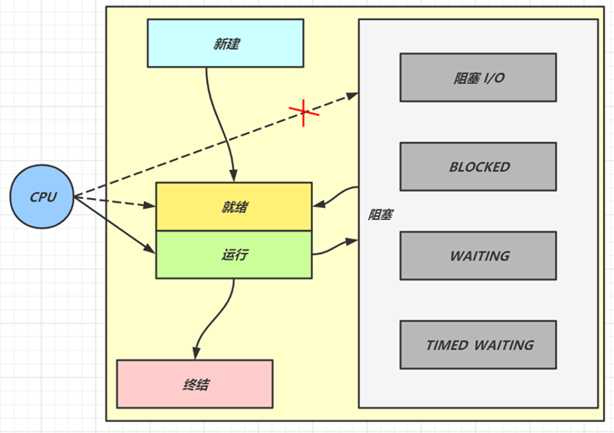
运行态：分到 cpu 时间，能真正执行线程内代码的
就绪态：有资格分到 cpu 时间，但还未轮到它的
阻塞态：没资格分到 cpu 时间的
- 涵盖了 java 状态中提到的阻塞、等待、有时限等待
- 多出了阻塞 I/O，指线程在调用阻塞 I/O 时，实际活由 I/O 设备完成，此时线程无事可做，只能干等
新建与终结态：与 java 中同名状态类似，不再啰嗦
2. 线程池
要求
- 掌握线程池的 7 大核心参数
七大参数
corePoolSize 核心线程数目 - 池中会保留的最多线程数
maximumPoolSize 最大线程数目 - 核心线程+救急线程的最大数目
keepAliveTime 生存时间 - 救急线程的生存时间，生存时间内没有新任务，此线程资源会释放
unit 时间单位 - 救急线程的生存时间单位，如秒、毫秒等
workQueue - 当没有空闲核心线程时，新来任务会加入到此队列排队，队列满会创建救急线程执行任务
threadFactory 线程工厂 - 可以定制线程对象的创建，例如设置线程名字、是否是守护线程等
handler 拒绝策略 - 当所有线程都在繁忙，workQueue 也放满时，会触发拒绝策略
- 抛异常 java.util.concurrent.ThreadPoolExecutor.AbortPolicy
- 由调用者执行任务 java.util.concurrent.ThreadPoolExecutor.CallerRunsPolicy
- 丢弃任务 java.util.concurrent.ThreadPoolExecutor.DiscardPolicy
- 丢弃最早排队任务 java.util.concurrent.ThreadPoolExecutor.DiscardOldestPolicy

代码说明
day02.TestThreadPoolExecutor 以较为形象的方式演示了线程池的核心组成
3. wait vs sleep
要求
- 能够说出二者区别
一个共同点，三个不同点
共同点
- wait() ，wait(long) 和 sleep(long) 的效果都是让当前线程暂时放弃 CPU 的使用权，进入阻塞状态
不同点
方法归属不同
- sleep(long) 是 Thread 的静态方法
- 而 wait()，wait(long) 都是 Object 的成员方法，每个对象都有
醒来时机不同
- 执行 sleep(long) 和 wait(long) 的线程都会在等待相应毫秒后醒来
- wait(long) 和 wait() 还可以被 notify 唤醒，wait() 如果不唤醒就一直等下去
- 它们都可以被打断唤醒
锁特性不同（重点）
- wait 方法的调用必须先获取 wait 对象的锁，而 sleep 则无此限制
- wait 方法执行后会释放对象锁，允许其它线程获得该对象锁（我放弃 cpu，但你们还可以用）
- 而 sleep 如果在 synchronized 代码块中执行，并不会释放对象锁（我放弃 cpu，你们也用不了）
4. lock vs synchronized
要求
- 掌握 lock 与 synchronized 的区别
- 理解 ReentrantLock 的公平、非公平锁
- 理解 ReentrantLock 中的条件变量
三个层面
不同点
语法层面
- synchronized 是关键字，源码在 jvm 中，用 c++ 语言实现
- Lock 是接口，源码由 jdk 提供，用 java 语言实现
- 使用 synchronized 时，退出同步代码块锁会自动释放，而使用 Lock 时，需要手动调用 unlock 方法释放锁
功能层面
- 二者均属于悲观锁、都具备基本的互斥、同步、锁重入功能
- Lock 提供了许多 synchronized 不具备的功能，例如获取等待状态、公平锁、可打断、可超时、多条件变量
- Lock 有适合不同场景的实现，如 ReentrantLock， ReentrantReadWriteLock
性能层面
- 在没有竞争时，synchronized 做了很多优化，如偏向锁、轻量级锁，性能不赖
- 在竞争激烈时，Lock 的实现通常会提供更好的性能
公平锁
公平锁的公平体现
- 已经处在阻塞队列中的线程（不考虑超时）始终都是公平的，先进先出
- 公平锁是指未处于阻塞队列中的线程来争抢锁，如果队列不为空，则老实到队尾等待
- 非公平锁是指未处于阻塞队列中的线程来争抢锁，与队列头唤醒的线程去竞争，谁抢到算谁的
公平锁会降低吞吐量，一般不用
条件变量
- ReentrantLock 中的条件变量功能类似于普通 synchronized 的 wait，notify，用在当线程获得锁后，发现条件不满足时，临时等待的链表结构
- 与 synchronized 的等待集合不同之处在于，ReentrantLock 中的条件变量可以有多个，可以实现更精细的等待、唤醒控制
代码说明
- day02.TestReentrantLock 用较为形象的方式演示 ReentrantLock 的内部结构
5. volatile
要求
- 掌握线程安全要考虑的三个问题
- 掌握 volatile 能解决哪些问题
原子性
- 起因：多线程下，不同线程的指令发生了交错导致的共享变量的读写混乱
- 解决：用悲观锁或乐观锁解决，volatile 并不能解决原子性
可见性
- 起因：由于编译器优化、或缓存优化、或 CPU 指令重排序优化导致的对共享变量所做的修改另外的线程看不到
- 解决：用 volatile 修饰共享变量，能够防止编译器等优化发生，让一个线程对共享变量的修改对另一个线程可见
有序性
起因：由于编译器优化、或缓存优化、或 CPU 指令重排序优化导致指令的实际执行顺序与编写顺序不一致
解决：用 volatile 修饰共享变量会在读、写共享变量时加入不同的屏障，阻止其他读写操作越过屏障，从而达到阻止重排序的效果
注意：
- volatile 变量写加的屏障是阻止上方其它写操作越过屏障排到 volatile 变量写之下
- volatile 变量读加的屏障是阻止下方其它读操作越过屏障排到 volatile 变量读之上
- volatile 读写加入的屏障只能防止同一线程内的指令重排
代码说明
day02.threadsafe.AddAndSubtract 演示原子性
day02.threadsafe.ForeverLoop 演示可见性
- 注意：本例经实践检验是编译器优化导致的可见性问题
day02.threadsafe.Reordering 演示有序性
- 需要打成 jar 包后测试
请同时参考视频讲解
6. 悲观锁 vs 乐观锁
要求
- 掌握悲观锁和乐观锁的区别
对比悲观锁与乐观锁
悲观锁的代表是 synchronized 和 Lock 锁
- 其核心思想是【线程只有占有了锁，才能去操作共享变量，每次只有一个线程占锁成功，获取锁失败的线程，都得停下来等待】
- 线程从运行到阻塞、再从阻塞到唤醒，涉及线程上下文切换，如果频繁发生，影响性能
- 实际上，线程在获取 synchronized 和 Lock 锁时，如果锁已被占用，都会做几次重试操作，减少阻塞的机会
乐观锁的代表是 AtomicInteger，使用 cas 来保证原子性
- 其核心思想是【无需加锁，每次只有一个线程能成功修改共享变量，其它失败的线程不需要停止，不断重试直至成功】
- 由于线程一直运行，不需要阻塞，因此不涉及线程上下文切换
- 它需要多核 cpu 支持，且线程数不应超过 cpu 核数
代码说明
- day02.SyncVsCas 演示了分别使用乐观锁和悲观锁解决原子赋值
- 请同时参考视频讲解
7. Hashtable vs ConcurrentHashMap
要求
- 掌握 Hashtable 与 ConcurrentHashMap 的区别
- 掌握 ConcurrentHashMap 在不同版本的实现区别
更形象的演示，见资料中的 hash-demo.jar，运行需要 jdk14 以上环境，进入 jar 包目录，执行下面命令
xxxxxxxxxx11java -jar --add-exports java.base/jdk.internal.misc=ALL-UNNAMED hash-demo.jar
Hashtable 对比 ConcurrentHashMap
- Hashtable 与 ConcurrentHashMap 都是线程安全的 Map 集合
- Hashtable 并发度低，整个 Hashtable 对应一把锁，同一时刻，只能有一个线程操作它
- ConcurrentHashMap 并发度高，整个 ConcurrentHashMap 对应多把锁，只要线程访问的是不同锁，那么不会冲突
ConcurrentHashMap 1.7
数据结构：
Segment(大数组) + HashEntry(小数组) + 链表，每个 Segment 对应一把锁，如果多个线程访问不同的 Segment，则不会冲突并发度：Segment 数组大小即并发度，决定了同一时刻最多能有多少个线程并发访问。Segment 数组不能扩容，意味着并发度在 ConcurrentHashMap 创建时就固定了
索引计算
- 假设大数组长度是
- 假设小数组长度是
- 假设大数组长度是
扩容：每个小数组的扩容相对独立，小数组在超过扩容因子时会触发扩容，每次扩容翻倍
Segment[0] 原型：首次创建其它小数组时，会以此原型为依据，数组长度，扩容因子都会以原型为准
ConcurrentHashMap 1.8
数据结构：
Node 数组 + 链表或红黑树，数组的每个头节点作为锁，如果多个线程访问的头节点不同，则不会冲突。首次生成头节点时如果发生竞争，利用 cas 而非 syncronized，进一步提升性能并发度：Node 数组有多大，并发度就有多大，与 1.7 不同，Node 数组可以扩容
扩容条件：Node 数组满 3/4 时就会扩容
扩容单位：以链表为单位从后向前迁移链表，迁移完成的将旧数组头节点替换为 ForwardingNode
扩容时并发 get
- 根据是否为 ForwardingNode 来决定是在新数组查找还是在旧数组查找，不会阻塞
- 如果链表长度超过 1，则需要对节点进行复制（创建新节点），怕的是节点迁移后 next 指针改变
- 如果链表最后几个元素扩容后索引不变，则节点无需复制
扩容时并发 put
- 如果 put 的线程与扩容线程操作的链表是同一个，put 线程会阻塞
- 如果 put 的线程操作的链表还未迁移完成，即头节点不是 ForwardingNode，则可以并发执行
- 如果 put 的线程操作的链表已经迁移完成，即头结点是 ForwardingNode，则可以协助扩容
与 1.7 相比是懒惰初始化
capacity 代表预估的元素个数，capacity / factory 来计算出初始数组大小，需要贴近
loadFactor 只在计算初始数组大小时被使用，之后扩容固定为 3/4
超过树化阈值时的扩容问题，如果容量已经是 64，直接树化，否则在原来容量基础上做 3 轮扩容
8. ThreadLocal
要求
- 掌握 ThreadLocal 的作用与原理
- 掌握 ThreadLocal 的内存释放时机
作用
- ThreadLocal 可以实现【资源对象】的线程隔离，让每个线程各用各的【资源对象】，避免争用引发的线程安全问题
- ThreadLocal 同时实现了线程内的资源共享
原理
每个线程内有一个 ThreadLocalMap 类型的成员变量，用来存储资源对象
- 调用 set 方法，就是以 ThreadLocal 自己作为 key，资源对象作为 value，放入当前线程的 ThreadLocalMap 集合中
- 调用 get 方法，就是以 ThreadLocal 自己作为 key，到当前线程中查找关联的资源值
- 调用 remove 方法，就是以 ThreadLocal 自己作为 key，移除当前线程关联的资源值
ThreadLocalMap 的一些特点
- key 的 hash 值统一分配
- 初始容量 16，扩容因子 2/3，扩容容量翻倍
- key 索引冲突后用开放寻址法解决冲突
弱引用 key
ThreadLocalMap 中的 key 被设计为弱引用，原因如下
- Thread 可能需要长时间运行（如线程池中的线程），如果 key 不再使用，需要在内存不足（GC）时释放其占用的内存
内存释放时机
被动 GC 释放 key
- 仅是让 key 的内存释放，关联 value 的内存并不会释放
懒惰被动释放 value
- get key 时，发现是 null key，则释放其 value 内存
- set key 时，会使用启发式扫描，清除临近的 null key 的 value 内存，启发次数与元素个数，是否发现 null key 有关
主动 remove 释放 key，value
- 会同时释放 key，value 的内存，也会清除临近的 null key 的 value 内存
- 推荐使用它，因为一般使用 ThreadLocal 时都把它作为静态变量（即强引用），因此无法被动依靠 GC 回收
虚拟机篇
1. JVM 内存结构
要求
- 掌握 JVM 内存结构划分
- 尤其要知道方法区、永久代、元空间的关系
结合一段 java 代码的执行理解内存划分

执行 javac 命令编译源代码为字节码
执行 java 命令
- 创建 JVM，调用类加载子系统加载 class，将类的信息存入方法区
- 创建 main 线程，使用的内存区域是 JVM 虚拟机栈，开始执行 main 方法代码
- 如果遇到了未见过的类，会继续触发类加载过程，同样会存入方法区
- 需要创建对象，会使用堆内存来存储对象
- 不再使用的对象，会由垃圾回收器在内存不足时回收其内存
- 调用方法时，方法内的局部变量、方法参数所使用的是 JVM 虚拟机栈中的栈帧内存
- 调用方法时，先要到方法区获得到该方法的字节码指令，由解释器将字节码指令解释为机器码执行
- 调用方法时，会将要执行的指令行号读到程序计数器，这样当发生了线程切换，恢复时就可以从中断的位置继续
- 对于非 java 实现的方法调用，使用内存称为本地方法栈（见说明）
- 对于热点方法调用，或者频繁的循环代码，由 JIT 即时编译器将这些代码编译成机器码缓存，提高执行性能
说明
- 加粗字体代表了 JVM 虚拟机组件
- 对于 Oracle 的 Hotspot 虚拟机实现，不区分虚拟机栈和本地方法栈
会发生内存溢出的区域
不会出现内存溢出的区域 – 程序计数器
出现 OutOfMemoryError 的情况
- 堆内存耗尽 – 对象越来越多，又一直在使用，不能被垃圾回收
- 方法区内存耗尽 – 加载的类越来越多，很多框架都会在运行期间动态产生新的类
- 虚拟机栈累积 – 每个线程最多会占用 1 M 内存，线程个数越来越多，而又长时间运行不销毁时
出现 StackOverflowError 的区域
- JVM 虚拟机栈，原因有方法递归调用未正确结束、反序列化 json 时循环引用
方法区、永久代、元空间
- 方法区是 JVM 规范中定义的一块内存区域，用来存储类元数据、方法字节码、即时编译器需要的信息等
- 永久代是 Hotspot 虚拟机对 JVM 规范的实现（1.8 之前）
- 元空间是 Hotspot 虚拟机对 JVM 规范的另一种实现（1.8 以后），使用本地内存作为这些信息的存储空间

从这张图学到三点
- 当第一次用到某个类是，由类加载器将 class 文件的类元信息读入，并存储于元空间
- X，Y 的类元信息是存储于元空间中，无法直接访问
- 可以用 X.class，Y.class 间接访问类元信息，它们俩属于 java 对象，我们的代码中可以使用

从这张图可以学到
- 堆内存中：当一个类加载器对象，这个类加载器对象加载的所有类对象，这些类对象对应的所有实例对象都没人引用时，GC 时就会对它们占用的对内存进行释放
- 元空间中：内存释放以类加载器为单位，当堆中类加载器内存释放时，对应的元空间中的类元信息也会释放
2. JVM 内存参数
要求
- 熟悉常见的 JVM 参数，尤其和大小相关的
堆内存，按大小设置

解释：
- -Xms 最小堆内存（包括新生代和老年代）
- -Xmx 最大对内存（包括新生代和老年代）
- 通常建议将 -Xms 与 -Xmx 设置为大小相等，即不需要保留内存，不需要从小到大增长，这样性能较好
- -XX:NewSize 与 -XX:MaxNewSize 设置新生代的最小与最大值，但一般不建议设置，由 JVM 自己控制
- -Xmn 设置新生代大小，相当于同时设置了 -XX:NewSize 与 -XX:MaxNewSize 并且取值相等
- 保留是指，一开始不会占用那么多内存，随着使用内存越来越多，会逐步使用这部分保留内存。下同
堆内存，按比例设置

解释：
- -XX:NewRatio=2:1 表示老年代占两份，新生代占一份
- -XX:SurvivorRatio=4:1 表示新生代分成六份，伊甸园占四份，from 和 to 各占一份
元空间内存设置

解释：
- class space 存储类的基本信息，最大值受 -XX:CompressedClassSpaceSize 控制
- non-class space 存储除类的基本信息以外的其它信息（如方法字节码、注解等）
- class space 和 non-class space 总大小受 -XX:MaxMetaspaceSize 控制
注意：
- 这里 -XX:CompressedClassSpaceSize 这段空间还与是否开启了指针压缩有关，这里暂不深入展开，可以简单认为指针压缩默认开启
代码缓存内存设置

解释：
如果 -XX:ReservedCodeCacheSize < 240m，所有优化机器代码不加区分存在一起
否则，分成三个区域（图中笔误 mthod 拼写错误，少一个 e）
- non-nmethods - JVM 自己用的代码
- profiled nmethods - 部分优化的机器码
- non-profiled nmethods - 完全优化的机器码
线程内存设置

官方参考文档
3. JVM 垃圾回收
要求
- 掌握垃圾回收算法
- 掌握分代回收思想
- 理解三色标记及漏标处理
- 了解常见垃圾回收器
三种垃圾回收算法
标记清除法

解释：
- 找到 GC Root 对象，即那些一定不会被回收的对象，如正执行方法内局部变量引用的对象、静态变量引用的对象
- 标记阶段：沿着 GC Root 对象的引用链找，直接或间接引用到的对象加上标记
- 清除阶段：释放未加标记的对象占用的内存
要点：
- 标记速度与存活对象线性关系
- 清除速度与内存大小线性关系
- 缺点是会产生内存碎片
标记整理法

解释：
- 前面的标记阶段、清理阶段与标记清除法类似
- 多了一步整理的动作，将存活对象向一端移动，可以避免内存碎片产生
特点：
- 标记速度与存活对象线性关系
- 清除与整理速度与内存大小成线性关系
- 缺点是性能上较慢
标记复制法

解释：
- 将整个内存分成两个大小相等的区域，from 和 to，其中 to 总是处于空闲，from 存储新创建的对象
- 标记阶段与前面的算法类似
- 在找出存活对象后，会将它们从 from 复制到 to 区域，复制的过程中自然完成了碎片整理
- 复制完成后，交换 from 和 to 的位置即可
特点：
- 标记与复制速度与存活对象成线性关系
- 缺点是会占用成倍的空间
GC 与分代回收算法
GC 的目的在于实现无用对象内存自动释放，减少内存碎片、加快分配速度
GC 要点：
回收区域是堆内存，不包括虚拟机栈
判断无用对象，使用可达性分析算法，三色标记法标记存活对象，回收未标记对象
GC 具体的实现称为垃圾回收器
GC 大都采用了分代回收思想
- 理论依据是大部分对象朝生夕灭，用完立刻就可以回收，另有少部分对象会长时间存活，每次很难回收
- 根据这两类对象的特性将回收区域分为新生代和老年代，新生代采用标记复制法、老年代一般采用标记整理法
根据 GC 的规模可以分成 Minor GC，Mixed GC，Full GC
分代回收
- 伊甸园 eden，最初对象都分配到这里，与幸存区 survivor（分成 from 和 to）合称新生代，

- 当伊甸园内存不足，标记伊甸园与 from（现阶段没有）的存活对象

- 将存活对象采用复制算法复制到 to 中，复制完毕后，伊甸园和 from 内存都得到释放
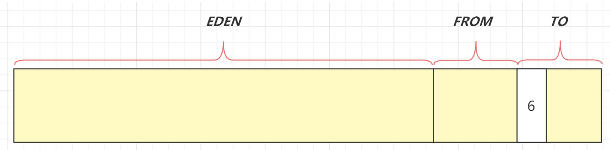
- 将 from 和 to 交换位置

- 经过一段时间后伊甸园的内存又出现不足

- 标记伊甸园与 from（现阶段没有）的存活对象

- 将存活对象采用复制算法复制到 to 中

- 复制完毕后，伊甸园和 from 内存都得到释放

- 将 from 和 to 交换位置
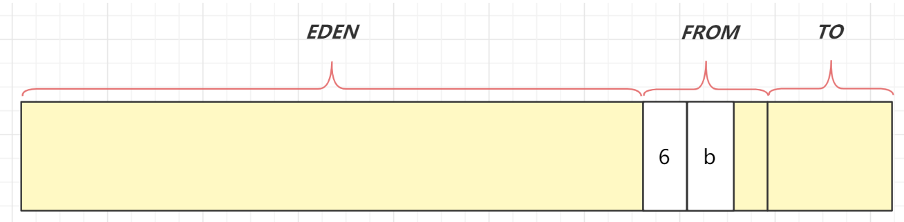
- 老年代 old，当幸存区对象熬过几次回收（最多15次），晋升到老年代（幸存区内存不足或大对象会导致提前晋升）
GC 规模
- Minor GC 发生在新生代的垃圾回收，暂停时间短
- Mixed GC 新生代 + 老年代部分区域的垃圾回收，G1 收集器特有
- Full GC 新生代 + 老年代完整垃圾回收，暂停时间长，应尽力避免
三色标记
即用三种颜色记录对象的标记状态
- 黑色 – 已标记
- 灰色 – 标记中
- 白色 – 还未标记
- 起始的三个对象还未处理完成，用灰色表示

- 该对象的引用已经处理完成，用黑色表示，黑色引用的对象变为灰色

- 依次类推

- 沿着引用链都标记了一遍
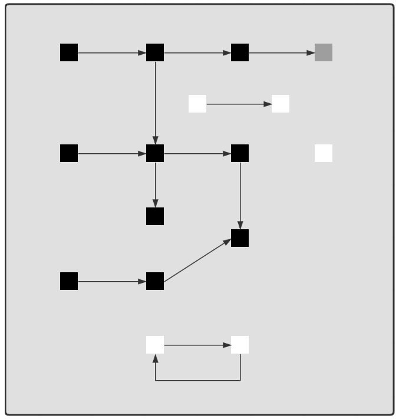
- 最后为标记的白色对象，即为垃圾

并发漏标问题
比较先进的垃圾回收器都支持并发标记，即在标记过程中，用户线程仍然能工作。但这样带来一个新的问题，如果用户线程修改了对象引用，那么就存在漏标问题。例如：
- 如图所示标记工作尚未完成

- 用户线程同时在工作，断开了第一层 3、4 两个对象之间的引用，这时对于正在处理 3 号对象的垃圾回收线程来讲，它会将 4 号对象当做是白色垃圾

- 但如果其他用户线程又建立了 2、4 两个对象的引用，这时因为 2 号对象是黑色已处理对象了，因此垃圾回收线程不会察觉到这个引用关系的变化，从而产生了漏标
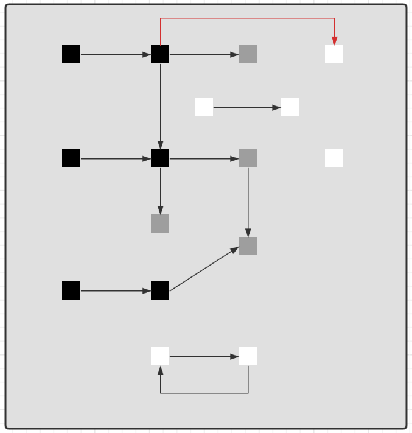
- 如果用户线程让黑色对象引用了一个新增对象，一样会存在漏标问题

因此对于并发标记而言，必须解决漏标问题，也就是要记录标记过程中的变化。有两种解决方法：
Incremental Update 增量更新法，CMS 垃圾回收器采用
- 思路是拦截每次赋值动作，只要赋值发生，被赋值的对象就会被记录下来，在重新标记阶段再确认一遍
Snapshot At The Beginning，SATB 原始快照法，G1 垃圾回收器采用
- 思路也是拦截每次赋值动作，不过记录的对象不同，也需要在重新标记阶段对这些对象二次处理
- 新加对象会被记录
- 被删除引用关系的对象也被记录
垃圾回收器 - Parallel GC
- eden 内存不足发生 Minor GC，采用标记复制算法，需要暂停用户线程
- old 内存不足发生 Full GC，采用标记整理算法，需要暂停用户线程
- 注重吞吐量
垃圾回收器 - ConcurrentMarkSweep GC
它是工作在 old 老年代，支持并发标记的一款回收器，采用并发清除算法
- 并发标记时不需暂停用户线程
- 重新标记时仍需暂停用户线程
如果并发失败（即回收速度赶不上创建新对象速度），会触发 Full GC
注重响应时间
垃圾回收器 - G1 GC
- 响应时间与吞吐量兼顾
- 划分成多个区域，每个区域都可以充当 eden，survivor，old， humongous，其中 humongous 专为大对象准备
- 分成三个阶段：新生代回收、并发标记、混合收集
- 如果并发失败（即回收速度赶不上创建新对象速度），会触发 Full GC
G1 回收阶段 - 新生代回收
- 初始时，所有区域都处于空闲状态

- 创建了一些对象，挑出一些空闲区域作为伊甸园区存储这些对象
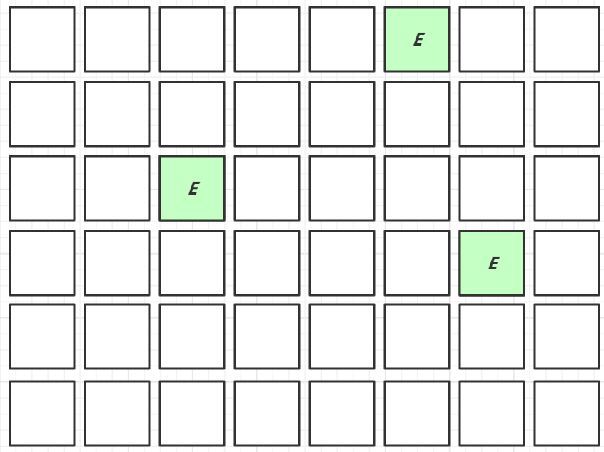
- 当伊甸园需要垃圾回收时，挑出一个空闲区域作为幸存区，用复制算法复制存活对象，需要暂停用户线程

- 复制完成，将之前的伊甸园内存释放

- 随着时间流逝，伊甸园的内存又有不足

- 将伊甸园以及之前幸存区中的存活对象，采用复制算法，复制到新的幸存区，其中较老对象晋升至老年代

- 释放伊甸园以及之前幸存区的内存

G1 回收阶段 - 并发标记与混合收集
- 当老年代占用内存超过阈值后，触发并发标记，这时无需暂停用户线程

- 并发标记之后，会有重新标记阶段解决漏标问题，此时需要暂停用户线程。这些都完成后就知道了老年代有哪些存活对象，随后进入混合收集阶段。此时不会对所有老年代区域进行回收，而是根据暂停时间目标优先回收价值高（存活对象少）的区域（这也是 Gabage First 名称的由来）。

- 混合收集阶段中，参与复制的有 eden、survivor、old，下图显示了伊甸园和幸存区的存活对象复制

- 下图显示了老年代和幸存区晋升的存活对象的复制

- 复制完成，内存得到释放。进入下一轮的新生代回收、并发标记、混合收集

4. 内存溢出
要求
- 能够说出几种典型的导致内存溢出的情况
典型情况
误用线程池导致的内存溢出
- 参考 day03.TestOomThreadPool
查询数据量太大导致的内存溢出
- 参考 day03.TestOomTooManyObject
动态生成类导致的内存溢出
- 参考 day03.TestOomTooManyClass
5. 类加载
要求
- 掌握类加载阶段
- 掌握类加载器
- 理解双亲委派机制
类加载过程的三个阶段
加载
- 将类的字节码载入方法区，并创建类.class 对象
- 如果此类的父类没有加载，先加载父类
- 加载是懒惰执行
链接
- 验证 – 验证类是否符合 Class 规范，合法性、安全性检查
- 准备 – 为 static 变量分配空间，设置默认值
- 解析 – 将常量池的符号引用解析为直接引用
初始化
- 静态代码块、static 修饰的变量赋值、static final 修饰的引用类型变量赋值，会被合并成一个
<cinit>方法，在初始化时被调用 - static final 修饰的基本类型变量赋值，在链接阶段就已完成
- 初始化是懒惰执行
- 静态代码块、static 修饰的变量赋值、static final 修饰的引用类型变量赋值，会被合并成一个
验证手段
使用 jps 查看进程号
使用 jhsdb 调试，执行命令
jhsdb.exe hsdb打开它的图形界面
- Class Browser 可以查看当前 jvm 中加载了哪些类
- 控制台的 universe 命令查看堆内存范围
- 控制台的 g1regiondetails 命令查看 region 详情
scanoops 起始地址 结束地址 对象类型可以根据类型查找某个区间内的对象地址- 控制台的
inspect 地址指令能够查看这个地址对应的对象详情使用 javap 命令可以查看 class 字节码
代码说明
- day03.loader.TestLazy - 验证类的加载是懒惰的，用到时才触发类加载
- day03.loader.TestFinal - 验证使用 final 修饰的变量不会触发类加载
jdk 8 的类加载器
| 名称 | 加载哪的类 | 说明 |
|---|---|---|
| Bootstrap ClassLoader | JAVA_HOME/jre/lib | 无法直接访问 |
| Extension ClassLoader | JAVA_HOME/jre/lib/ext | 上级为 Bootstrap，显示为 null |
| Application ClassLoader | classpath | 上级为 Extension |
| 自定义类加载器 | 自定义 | 上级为 Application |
双亲委派机制
所谓的双亲委派，就是指优先委派上级类加载器进行加载，如果上级类加载器
- 能找到这个类，由上级加载，加载后该类也对下级加载器可见
- 找不到这个类，则下级类加载器才有资格执行加载
双亲委派的目的有两点
- 让上级类加载器中的类对下级共享（反之不行），即能让你的类能依赖到 jdk 提供的核心类
- 让类的加载有优先次序，保证核心类优先加载
对双亲委派的误解
下面-interview题的回答是错误的

错在哪了？
- 自己编写类加载器就能加载一个假冒的 java.lang.System 吗? 答案是不行。
- 假设你自己的类加载器用双亲委派，那么优先由启动类加载器加载真正的 java.lang.System，自然不会加载假冒的
- 假设你自己的类加载器不用双亲委派，那么你的类加载器加载假冒的 java.lang.System 时，它需要先加载父类 java.lang.Object，而你没有用委派，找不到 java.lang.Object 所以加载会失败
- 以上也仅仅是假设。事实上操作你就会发现，自定义类加载器加载以 java. 打头的类时，会抛安全异常，在 jdk9 以上版本这些特殊包名都与模块进行了绑定，更连编译都过不了
代码说明
- day03.loader.TestJdk9ClassLoader - 演示类加载器与模块的绑定关系
6. 四种引用
要求
- 掌握四种引用
强引用
- 普通变量赋值即为强引用，如 A a = new A();
- 通过 GC Root 的引用链，如果强引用不到该对象，该对象才能被回收
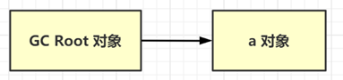
软引用（SoftReference）
- 例如：SoftReference a = new SoftReference(new A());
- 如果仅有软引用该对象时，首次垃圾回收不会回收该对象，如果内存仍不足，再次回收时才会释放对象
- 软引用自身需要配合引用队列来释放
- 典型例子是反射数据
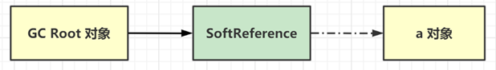
弱引用（WeakReference）
- 例如：WeakReference a = new WeakReference(new A());
- 如果仅有弱引用引用该对象时，只要发生垃圾回收，就会释放该对象
- 弱引用自身需要配合引用队列来释放
- 典型例子是 ThreadLocalMap 中的 Entry 对象

虚引用（PhantomReference）
- 例如： PhantomReference a = new PhantomReference(new A(), referenceQueue);
- 必须配合引用队列一起使用，当虚引用所引用的对象被回收时，由 Reference Handler 线程将虚引用对象入队，这样就可以知道哪些对象被回收，从而对它们关联的资源做进一步处理
- 典型例子是 Cleaner 释放 DirectByteBuffer 关联的直接内存
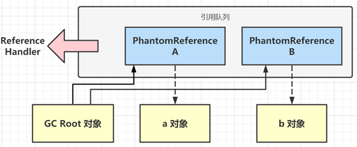
代码说明
- day03.reference.TestPhantomReference - 演示虚引用的基本用法
- day03.reference.TestWeakReference - 模拟 ThreadLocalMap, 采用引用队列释放 entry 内存
7. finalize
要求
- 掌握 finalize 的工作原理与缺点
finalize
- 它是 Object 中的一个方法，如果子类重写它，垃圾回收时此方法会被调用，可以在其中进行资源释放和清理工作
- 将资源释放和清理放在 finalize 方法中非常不好，非常影响性能，严重时甚至会引起 OOM，从 Java9 开始就被标注为 @Deprecated，不建议被使用了
finalize 原理
- 对 finalize 方法进行处理的核心逻辑位于 java.lang.ref.Finalizer 类中，它包含了名为 unfinalized 的静态变量（双向链表结构），Finalizer 也可被视为另一种引用对象（地位与软、弱、虚相当，只是不对外，无法直接使用）
- 当重写了 finalize 方法的对象，在构造方法调用之时，JVM 都会将其包装成一个 Finalizer 对象，并加入 unfinalized 链表中

- Finalizer 类中还有另一个重要的静态变量，即 ReferenceQueue 引用队列，刚开始它是空的。当狗对象可以被当作垃圾回收时，就会把这些狗对象对应的 Finalizer 对象加入此引用队列
- 但此时 Dog 对象还没法被立刻回收，因为 unfinalized -> Finalizer 这一引用链还在引用它嘛，为的是【先别着急回收啊，等我调完 finalize 方法，再回收】
- FinalizerThread 线程会从 ReferenceQueue 中逐一取出每个 Finalizer 对象，把它们从链表断开并真正调用 finallize 方法

- 由于整个 Finalizer 对象已经从 unfinalized 链表中断开，这样没谁能引用到它和狗对象，所以下次 gc 时就被回收了
finalize 缺点
- 无法保证资源释放：FinalizerThread 是守护线程，代码很有可能没来得及执行完，线程就结束了
- 无法判断是否发生错误：执行 finalize 方法时，会吞掉任意异常（Throwable）
- 内存释放不及时：重写了 finalize 方法的对象在第一次被 gc 时，并不能及时释放它占用的内存，因为要等着 FinalizerThread 调用完 finalize，把它从 unfinalized 队列移除后，第二次 gc 时才能真正释放内存
- 有的文章提到【Finalizer 线程会和我们的主线程进行竞争，不过由于它的优先级较低，获取到的CPU时间较少，因此它永远也赶不上主线程的步伐】这个显然是错误的，FinalizerThread 的优先级较普通线程更高，原因应该是 finalize 串行执行慢等原因综合导致
代码说明
- day03.reference.TestFinalize - finalize 的测试代码
框架篇
1. Spring refresh 流程
要求
- 掌握 refresh 的 12 个步骤
Spring refresh 概述
refresh 是 AbstractApplicationContext 中的一个方法，负责初始化 ApplicationContext 容器，容器必须调用 refresh 才能正常工作。它的内部主要会调用 12 个方法，我们把它们称为 refresh 的 12 个步骤：
- prepareRefresh
- obtainFreshBeanFactory
- prepareBeanFactory
- postProcessBeanFactory
- invokeBeanFactoryPostProcessors
- registerBeanPostProcessors
- initMessageSource
- initApplicationEventMulticaster
- onRefresh
- registerListeners
- finishBeanFactoryInitialization
- finishRefresh
功能分类
- 1 为准备环境
- 2 3 4 5 6 为准备 BeanFactory
- 7 8 9 10 12 为准备 ApplicationContext
- 11 为初始化 BeanFactory 中非延迟单例 bean
1. prepareRefresh
这一步创建和准备了 Environment 对象，它作为 ApplicationContext 的一个成员变量
Environment 对象的作用之一是为后续 @Value，值注入时提供键值
Environment 分成三个主要部分
- systemProperties - 保存 java 环境键值
- systemEnvironment - 保存系统环境键值
- 自定义 PropertySource - 保存自定义键值，例如来自于 *.properties 文件的键值

2. obtainFreshBeanFactory
这一步获取（或创建） BeanFactory，它也是作为 ApplicationContext 的一个成员变量
BeanFactory 的作用是负责 bean 的创建、依赖注入和初始化，bean 的各项特征由 BeanDefinition 定义
- BeanDefinition 作为 bean 的设计蓝图，规定了 bean 的特征，如单例多例、依赖关系、初始销毁方法等
- BeanDefinition 的来源有多种多样，可以是通过 xml 获得、配置类获得、组件扫描获得，也可以是编程添加
所有的 BeanDefinition 会存入 BeanFactory 中的 beanDefinitionMap 集合

3. prepareBeanFactory
这一步会进一步完善 BeanFactory，为它的各项成员变量赋值
beanExpressionResolver 用来解析 SpEL，常见实现为 StandardBeanExpressionResolver
propertyEditorRegistrars 会注册类型转换器
- 它在这里使用了 ResourceEditorRegistrar 实现类
- 并应用 ApplicationContext 提供的 Environment 完成 ${ } 解析
registerResolvableDependency 来注册 beanFactory 以及 ApplicationContext，让它们也能用于依赖注入
beanPostProcessors 是 bean 后处理器集合，会工作在 bean 的生命周期各个阶段，此处会添加两个：
- ApplicationContextAwareProcessor 用来解析 Aware 接口
- ApplicationListenerDetector 用来识别容器中 ApplicationListener 类型的 bean

4. postProcessBeanFactory
这一步是空实现，留给子类扩展。
- 一般 Web 环境的 ApplicationContext 都要利用它注册新的 Scope，完善 Web 下的 BeanFactory
这里体现的是模板方法设计模式
5. invokeBeanFactoryPostProcessors
这一步会调用 beanFactory 后处理器
beanFactory 后处理器，充当 beanFactory 的扩展点，可以用来补充或修改 BeanDefinition
常见的 beanFactory 后处理器有
- ConfigurationClassPostProcessor – 解析 @Configuration、@Bean、@Import、@PropertySource 等
- PropertySourcesPlaceHolderConfigurer – 替换 BeanDefinition 中的 ${ }
- MapperScannerConfigurer – 补充 Mapper 接口对应的 BeanDefinition

6. registerBeanPostProcessors
这一步是继续从 beanFactory 中找出 bean 后处理器，添加至 beanPostProcessors 集合中
bean 后处理器，充当 bean 的扩展点，可以工作在 bean 的实例化、依赖注入、初始化阶段，常见的有：
- AutowiredAnnotationBeanPostProcessor 功能有：解析 @Autowired，@Value 注解
- CommonAnnotationBeanPostProcessor 功能有：解析 @Resource，@PostConstruct，@PreDestroy
- AnnotationAwareAspectJAutoProxyCreator 功能有：为符合切点的目标 bean 自动创建代理

7. initMessageSource
- 这一步是为 ApplicationContext 添加 messageSource 成员，实现国际化功能
- 去 beanFactory 内找名为 messageSource 的 bean，如果没有，则提供空的 MessageSource 实现

8. initApplicationContextEventMulticaster
- 这一步为 ApplicationContext 添加事件广播器成员，即 applicationContextEventMulticaster
- 它的作用是发布事件给监听器
- 去 beanFactory 找名为 applicationEventMulticaster 的 bean 作为事件广播器，若没有，会创建默认的事件广播器
- 之后就可以调用 ApplicationContext.publishEvent(事件对象) 来发布事件

9. onRefresh
这一步是空实现，留给子类扩展
- SpringBoot 中的子类在这里准备了 WebServer，即内嵌 web 容器
体现的是模板方法设计模式
10. registerListeners
这一步会从多种途径找到事件监听器，并添加至 applicationEventMulticaster
事件监听器顾名思义，用来接收事件广播器发布的事件，有如下来源
- 事先编程添加的
- 来自容器中的 bean
- 来自于 @EventListener 的解析
要实现事件监听器，只需要实现 ApplicationListener 接口，重写其中 onApplicationEvent(E e) 方法即可

11. finishBeanFactoryInitialization
这一步会将 beanFactory 的成员补充完毕，并初始化所有非延迟单例 bean
conversionService 也是一套转换机制，作为对 PropertyEditor 的补充
embeddedValueResolvers 即内嵌值解析器，用来解析 @Value 中的 ${ }，借用的是 Environment 的功能
singletonObjects 即单例池，缓存所有单例对象
- 对象的创建都分三个阶段，每一阶段都有不同的 bean 后处理器参与进来，扩展功能

12. finishRefresh
这一步会为 ApplicationContext 添加 lifecycleProcessor 成员，用来控制容器内需要生命周期管理的 bean
如果容器中有名称为 lifecycleProcessor 的 bean 就用它，否则创建默认的生命周期管理器
准备好生命周期管理器，就可以实现
- 调用 context 的 start，即可触发所有实现 LifeCycle 接口 bean 的 start
- 调用 context 的 stop，即可触发所有实现 LifeCycle 接口 bean 的 stop
发布 ContextRefreshed 事件，整个 refresh 执行完成

2. Spring bean 生命周期
要求
- 掌握 Spring bean 的生命周期
bean 生命周期 概述
bean 的生命周期从调用 beanFactory 的 getBean 开始，到这个 bean 被销毁，可以总结为以下七个阶段：
- 处理名称，检查缓存
- 处理父子容器
- 处理 dependsOn
- 选择 scope 策略
- 创建 bean
- 类型转换处理
- 销毁 bean
注意
- 划分的阶段和名称并不重要，重要的是理解整个过程中做了哪些事情
1. 处理名称，检查缓存
这一步会处理别名，将别名解析为实际名称
对 FactoryBean 也会特殊处理，如果以 & 开头表示要获取 FactoryBean 本身，否则表示要获取其产品
这里针对单例对象会检查一级、二级、三级缓存
singletonFactories 三级缓存，存放单例工厂对象
earlySingletonObjects 二级缓存，存放单例工厂的产品对象
- 如果发生循环依赖，产品是代理；无循环依赖，产品是原始对象
singletonObjects 一级缓存，存放单例成品对象
2. 处理父子容器
- 如果当前容器根据名字找不到这个 bean，此时若父容器存在，则执行父容器的 getBean 流程
- 父子容器的 bean 名称可以重复
3. 处理 dependsOn
- 如果当前 bean 有通过 dependsOn 指定了非显式依赖的 bean，这一步会提前创建这些 dependsOn 的 bean
- 所谓非显式依赖，就是指两个 bean 之间不存在直接依赖关系，但需要控制它们的创建先后顺序
4. 选择 scope 策略
- 对于 singleton scope，首先到单例池去获取 bean，如果有则直接返回，没有再进入创建流程
- 对于 prototype scope，每次都会进入创建流程
- 对于自定义 scope，例如 request，首先到 request 域获取 bean，如果有则直接返回，没有再进入创建流程
5.1 创建 bean - 创建 bean 实例
| 要点 | 总结 |
|---|---|
| 有自定义 TargetSource 的情况 | 由 AnnotationAwareAspectJAutoProxyCreator 创建代理返回 |
| Supplier 方式创建 bean 实例 | 为 Spring 5.0 新增功能，方便编程方式创建 bean 实例 |
| FactoryMethod 方式 创建 bean 实例 | ① 分成静态工厂与实例工厂；② 工厂方法若有参数，需要对工厂方法参数进行解析，利用 resolveDependency；③ 如果有多个工厂方法候选者，还要进一步按权重筛选 |
| AutowiredAnnotationBeanPostProcessor | ① 优先选择带 @Autowired 注解的构造；② 若有唯一的带参构造，也会入选 |
| mbd.getPreferredConstructors | 选择所有公共构造，这些构造之间按权重筛选 |
| 采用默认构造 | 如果上面的后处理器和 BeanDefiniation 都没找到构造，采用默认构造，即使是私有的 |
5.2 创建 bean - 依赖注入
| 要点 | 总结 |
|---|---|
| AutowiredAnnotationBeanPostProcessor | 识别 @Autowired 及 @Value 标注的成员，封装为 InjectionMetadata 进行依赖注入 |
| CommonAnnotationBeanPostProcessor | 识别 @Resource 标注的成员，封装为 InjectionMetadata 进行依赖注入 |
| resolveDependency | 用来查找要装配的值，可以识别：① Optional；② ObjectFactory 及 ObjectProvider；③ @Lazy 注解；④ @Value 注解（${ }, #{ }, 类型转换）；⑤ 集合类型（Collection，Map，数组等）；⑥ 泛型和 @Qualifier（用来区分类型歧义）；⑦ primary 及名字匹配（用来区分类型歧义） |
| AUTOWIRE_BY_NAME | 根据成员名字找 bean 对象，修改 mbd 的 propertyValues，不会考虑简单类型的成员 |
| AUTOWIRE_BY_TYPE | 根据成员类型执行 resolveDependency 找到依赖注入的值，修改 mbd 的 propertyValues |
| applyPropertyValues | 根据 mbd 的 propertyValues 进行依赖注入（即xml中 <property name ref|value/>） |
5.3 创建 bean - 初始化
| 要点 | 总结 |
|---|---|
| 内置 Aware 接口的装配 | 包括 BeanNameAware，BeanFactoryAware 等 |
| 扩展 Aware 接口的装配 | 由 ApplicationContextAwareProcessor 解析，执行时机在 postProcessBeforeInitialization |
| @PostConstruct | 由 CommonAnnotationBeanPostProcessor 解析，执行时机在 postProcessBeforeInitialization |
| InitializingBean | 通过接口回调执行初始化 |
| initMethod | 根据 BeanDefinition 得到的初始化方法执行初始化，即 <bean init-method> 或 @Bean(initMethod) |
| 创建 aop 代理 | 由 AnnotationAwareAspectJAutoProxyCreator 创建，执行时机在 postProcessAfterInitialization |
5.4 创建 bean - 注册可销毁 bean
在这一步判断并登记可销毁 bean
判断依据
- 如果实现了 DisposableBean 或 AutoCloseable 接口，则为可销毁 bean
- 如果自定义了 destroyMethod，则为可销毁 bean
- 如果采用 @Bean 没有指定 destroyMethod，则采用自动推断方式获取销毁方法名（close，shutdown）
- 如果有 @PreDestroy 标注的方法
存储位置
- singleton scope 的可销毁 bean 会存储于 beanFactory 的成员当中
- 自定义 scope 的可销毁 bean 会存储于对应的域对象当中
- prototype scope 不会存储，需要自己找到此对象销毁
存储时都会封装为 DisposableBeanAdapter 类型对销毁方法的调用进行适配
6. 类型转换处理
- 如果 getBean 的 requiredType 参数与实际得到的对象类型不同，会尝试进行类型转换
7. 销毁 bean
销毁时机
- singleton bean 的销毁在 ApplicationContext.close 时，此时会找到所有 DisposableBean 的名字，逐一销毁
- 自定义 scope bean 的销毁在作用域对象生命周期结束时
- prototype bean 的销毁可以通过自己手动调用 AutowireCapableBeanFactory.destroyBean 方法执行销毁
同一 bean 中不同形式销毁方法的调用次序
- 优先后处理器销毁，即 @PreDestroy
- 其次 DisposableBean 接口销毁
- 最后 destroyMethod 销毁（包括自定义名称，推断名称，AutoCloseable 接口 多选一）
3. Spring bean 循环依赖
要求
- 掌握单例 set 方式循环依赖的原理
- 掌握其它循环依赖的解决方法
循环依赖的产生
- 首先要明白，bean 的创建要遵循一定的步骤，必须是创建、注入、初始化三步，这些顺序不能乱

set 方法（包括成员变量）的循环依赖如图所示
- 可以在【a 创建】和【a set 注入 b】之间加入 b 的整个流程来解决
- 【b set 注入 a】 时可以成功，因为之前 a 的实例已经创建完毕
- a 的顺序，及 b 的顺序都能得到保障

- 构造方法的循环依赖如图所示，显然无法用前面的方法解决

构造循环依赖的解决
思路1
- a 注入 b 的代理对象，这样能够保证 a 的流程走通
- 后续需要用到 b 的真实对象时，可以通过代理间接访问

思路2
- a 注入 b 的工厂对象，让 b 的实例创建被推迟，这样能够保证 a 的流程先走通
- 后续需要用到 b 的真实对象时，再通过 ObjectFactory 工厂间接访问
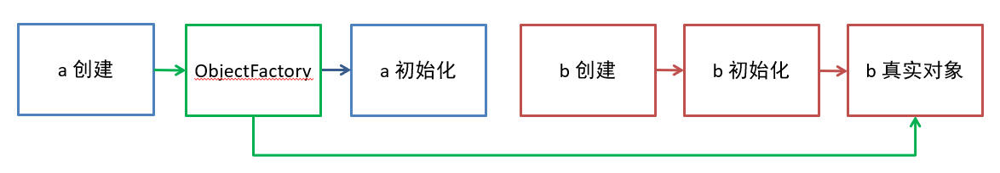
- 示例1：用 @Lazy 为构造方法参数生成代理
xxxxxxxxxx411public class App60_1 {2
3 static class A {4 private static final Logger log = LoggerFactory.getLogger("A");5 private B b;6
7 public A( B b) {8 log.debug("A(B b) {}", b.getClass());9 this.b = b;10 }11
12 13 public void init() {14 log.debug("init()");15 }16 }17
18 static class B {19 private static final Logger log = LoggerFactory.getLogger("B");20 private A a;21
22 public B(A a) {23 log.debug("B({})", a);24 this.a = a;25 }26
27 28 public void init() {29 log.debug("init()");30 }31 }32
33 public static void main(String[] args) {34 GenericApplicationContext context = new GenericApplicationContext();35 context.registerBean("a", A.class);36 context.registerBean("b", B.class);37 AnnotationConfigUtils.registerAnnotationConfigProcessors(context.getDefaultListableBeanFactory());38 context.refresh();39 System.out.println();40 }41}- 示例2：用 ObjectProvider 延迟依赖对象的创建
xxxxxxxxxx431public class App60_2 {2
3 static class A {4 private static final Logger log = LoggerFactory.getLogger("A");5 private ObjectProvider<B> b;6
7 public A(ObjectProvider<B> b) {8 log.debug("A({})", b);9 this.b = b;10 }11
12 13 public void init() {14 log.debug("init()");15 }16 }17
18 static class B {19 private static final Logger log = LoggerFactory.getLogger("B");20 private A a;21
22 public B(A a) {23 log.debug("B({})", a);24 this.a = a;25 }26
27 28 public void init() {29 log.debug("init()");30 }31 }32
33 public static void main(String[] args) {34 GenericApplicationContext context = new GenericApplicationContext();35 context.registerBean("a", A.class);36 context.registerBean("b", B.class);37 AnnotationConfigUtils.registerAnnotationConfigProcessors(context.getDefaultListableBeanFactory());38 context.refresh();39
40 System.out.println(context.getBean(A.class).b.getObject());41 System.out.println(context.getBean(B.class));42 }43}- 示例3：用 @Scope 产生代理
xxxxxxxxxx101public class App60_3 {2
3 public static void main(String[] args) {4 GenericApplicationContext context = new GenericApplicationContext();5 ClassPathBeanDefinitionScanner scanner = new ClassPathBeanDefinitionScanner(context.getDefaultListableBeanFactory());6 scanner.scan("com.itheima.app60.sub");7 context.refresh();8 System.out.println();9 }10}
xxxxxxxxxx151class A {3 private static final Logger log = LoggerFactory.getLogger("A");4 private B b;5
6 public A(B b) {7 log.debug("A(B b) {}", b.getClass());8 this.b = b;9 }10
11 12 public void init() {13 log.debug("init()");14 }15}
xxxxxxxxxx161(proxyMode = ScopedProxyMode.TARGET_CLASS)2class B {4 private static final Logger log = LoggerFactory.getLogger("B");5 private A a;6
7 public B(A a) {8 log.debug("B({})", a);9 this.a = a;10 }11
12 13 public void init() {14 log.debug("init()");15 }16}
- 示例4：用 Provider 接口解决，原理上与 ObjectProvider 一样，Provider 接口是独立的 jar 包，需要加入依赖
xxxxxxxxxx51<dependency>2 <groupId>javax.inject</groupId>3 <artifactId>javax.inject</artifactId>4 <version>1</version>5</dependency>
xxxxxxxxxx431public class App60_4 {2
3 static class A {4 private static final Logger log = LoggerFactory.getLogger("A");5 private Provider<B> b;6
7 public A(Provider<B> b) {8 log.debug("A({}})", b);9 this.b = b;10 }11
12 13 public void init() {14 log.debug("init()");15 }16 }17
18 static class B {19 private static final Logger log = LoggerFactory.getLogger("B");20 private A a;21
22 public B(A a) {23 log.debug("B({}})", a);24 this.a = a;25 }26
27 28 public void init() {29 log.debug("init()");30 }31 }32
33 public static void main(String[] args) {34 GenericApplicationContext context = new GenericApplicationContext();35 context.registerBean("a", A.class);36 context.registerBean("b", B.class);37 AnnotationConfigUtils.registerAnnotationConfigProcessors(context.getDefaultListableBeanFactory());38 context.refresh();39
40 System.out.println(context.getBean(A.class).b.get());41 System.out.println(context.getBean(B.class));42 }43}
解决 set 循环依赖的原理
一级缓存

作用是保证单例对象仅被创建一次
- 第一次走
getBean("a")流程后，最后会将成品 a 放入 singletonObjects 一级缓存 - 后续再走
getBean("a")流程时，先从一级缓存中找，这时已经有成品 a，就无需再次创建
一级缓存与循环依赖

一级缓存无法解决循环依赖问题，分析如下
- 无论是获取 bean a 还是获取 bean b，走的方法都是同一个 getBean 方法，假设先走
getBean("a") - 当 a 的实例对象创建，接下来执行
a.setB()时，需要走getBean("b")流程，红色箭头 1 - 当 b 的实例对象创建，接下来执行
b.setA()时，又回到了getBean("a")的流程，红色箭头 2 - 但此时 singletonObjects 一级缓存内没有成品的 a，陷入了死循环
二级缓存

解决思路如下：
- 再增加一个 singletonFactories 缓存
- 在依赖注入前，即
a.setB()以及b.setA()将 a 及 b 的半成品对象（未完成依赖注入和初始化）放入此缓存 - 执行依赖注入时，先看看 singletonFactories 缓存中是否有半成品的对象，如果有拿来注入，顺利走完流程
对于上面的图
a = new A()执行之后就会把这个半成品的 a 放入 singletonFactories 缓存，即factories.put(a)- 接下来执行
a.setB()，走入getBean("b")流程，红色箭头 3 - 这回再执行到
b.setA()时，需要一个 a 对象，有没有呢？有！ factories.get()在 singletonFactories 缓存中就可以找到，红色箭头 4 和 5- b 的流程能够顺利走完，将 b 成品放入 singletonObject 一级缓存，返回到 a 的依赖注入流程，红色箭头 6
二级缓存与创建代理
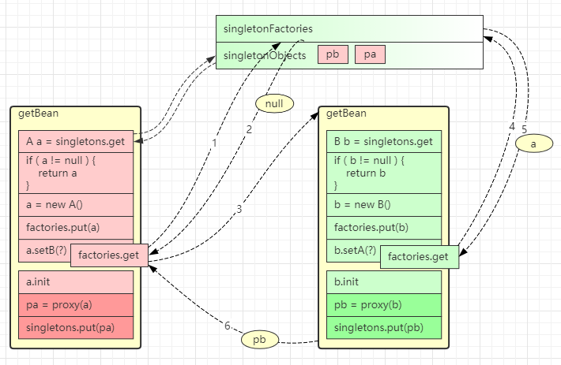
二级缓存无法正确处理循环依赖并且包含有代理创建的场景，分析如下
- spring 默认要求，在
a.init完成之后才能创建代理pa = proxy(a) - 由于 a 的代理创建时机靠后，在执行
factories.put(a)向 singletonFactories 中放入的还是原始对象 - 接下来箭头 3、4、5 这几步 b 对象拿到和注入的都是原始对象
三级缓存

简单分析的话，只需要将代理的创建时机放在依赖注入之前即可，但 spring 仍然希望代理的创建时机在 init 之后，只有出现循环依赖时，才会将代理的创建时机提前。所以解决思路稍显复杂：
- 图中
factories.put(fa)放入的既不是原始对象，也不是代理对象而是工厂对象 fa - 当检查出发生循环依赖时，fa 的产品就是代理 pa，没有发生循环依赖，fa 的产品是原始对象 a
- 假设出现了循环依赖，拿到了 singletonFactories 中的工厂对象，通过在依赖注入前获得了 pa，红色箭头 5
- 这回
b.setA()注入的就是代理对象，保证了正确性，红色箭头 7 - 还需要把 pa 存入新加的 earlySingletonObjects 缓存，红色箭头 6
a.init完成后，无需二次创建代理，从哪儿找到 pa 呢？earlySingletonObjects 已经缓存，蓝色箭头 9
当成品对象产生，放入 singletonObject 后，singletonFactories 和 earlySingletonObjects 就中的对象就没有用处，清除即可
4. Spring 事务失效
要求
- 掌握事务失效的八种场景
1. 抛出检查异常导致事务不能正确回滚
xxxxxxxxxx161public class Service1 {3
4 5 private AccountMapper accountMapper;6
7 8 public void transfer(int from, int to, int amount) throws FileNotFoundException {9 int fromBalance = accountMapper.findBalanceBy(from);10 if (fromBalance - amount >= 0) {11 accountMapper.update(from, -1 * amount);12 new FileInputStream("aaa");13 accountMapper.update(to, amount);14 }15 }16}原因：Spring 默认只会回滚非检查异常
解法：配置 rollbackFor 属性
@Transactional(rollbackFor = Exception.class)
2. 业务方法内自己 try-catch 异常导致事务不能正确回滚
xxxxxxxxxx201public class Service2 {3
4 5 private AccountMapper accountMapper;6
7 (rollbackFor = Exception.class)8 public void transfer(int from, int to, int amount) {9 try {10 int fromBalance = accountMapper.findBalanceBy(from);11 if (fromBalance - amount >= 0) {12 accountMapper.update(from, -1 * amount);13 new FileInputStream("aaa");14 accountMapper.update(to, amount);15 }16 } catch (FileNotFoundException e) {17 e.printStackTrace();18 }19 }20}原因：事务通知只有捉到了目标抛出的异常，才能进行后续的回滚处理，如果目标自己处理掉异常，事务通知无法知悉
解法1：异常原样抛出
- 在 catch 块添加
throw new RuntimeException(e);
- 在 catch 块添加
解法2：手动设置 TransactionStatus.setRollbackOnly()
- 在 catch 块添加
TransactionInterceptor.currentTransactionStatus().setRollbackOnly();
- 在 catch 块添加
3. aop 切面顺序导致导致事务不能正确回滚
xxxxxxxxxx161public class Service3 {3
4 5 private AccountMapper accountMapper;6
7 (rollbackFor = Exception.class)8 public void transfer(int from, int to, int amount) throws FileNotFoundException {9 int fromBalance = accountMapper.findBalanceBy(from);10 if (fromBalance - amount >= 0) {11 accountMapper.update(from, -1 * amount);12 new FileInputStream("aaa");13 accountMapper.update(to, amount);14 }15 }16}
xxxxxxxxxx131public class MyAspect {3 ("execution(* transfer(..))")4 public Object around(ProceedingJoinPoint pjp) throws Throwable {5 LoggerUtils.get().debug("log:{}", pjp.getTarget());6 try {7 return pjp.proceed();8 } catch (Throwable e) {9 e.printStackTrace();10 return null;11 }12 }13}- 原因：事务切面优先级最低，但如果自定义的切面优先级和他一样，则还是自定义切面在内层，这时若自定义切面没有正确抛出异常…
- 解法1、2：同情况2 中的解法:1、2
- 解法3：调整切面顺序，在 MyAspect 上添加
@Order(Ordered.LOWEST_PRECEDENCE - 1)（不推荐）
4. 非 public 方法导致的事务失效
xxxxxxxxxx151public class Service4 {3
4 5 private AccountMapper accountMapper;6
7 8 void transfer(int from, int to, int amount) throws FileNotFoundException {9 int fromBalance = accountMapper.findBalanceBy(from);10 if (fromBalance - amount >= 0) {11 accountMapper.update(from, -1 * amount);12 accountMapper.update(to, amount);13 }14 }15}- 原因：Spring 为方法创建代理、添加事务通知、前提条件都是该方法是 public 的
- 解法1：改为 public 方法
- 解法2：添加 bean 配置如下（不推荐）
xxxxxxxxxx41public TransactionAttributeSource transactionAttributeSource() {3 return new AnnotationTransactionAttributeSource(false);4}
5. 父子容器导致的事务失效
xxxxxxxxxx191package day04.tx.app.service;2
3// ...4
5public class Service5 {7
8 9 private AccountMapper accountMapper;10
11 (rollbackFor = Exception.class)12 public void transfer(int from, int to, int amount) throws FileNotFoundException {13 int fromBalance = accountMapper.findBalanceBy(from);14 if (fromBalance - amount >= 0) {15 accountMapper.update(from, -1 * amount);16 accountMapper.update(to, amount);17 }18 }19}控制器类
xxxxxxxxxx141package day04.tx.app.controller;2
3// ...4
5public class AccountController {7
8 9 public Service5 service;10
11 public void transfer(int from, int to, int amount) throws FileNotFoundException {12 service.transfer(from, to, amount);13 }14}App 配置类
xxxxxxxxxx71("day04.tx.app.service")3// ...5public class AppConfig {6 // ... 有事务相关配置7}Web 配置类
xxxxxxxxxx61("day04.tx.app")3// ...4public class WebConfig {5 // ... 无事务配置6}现在配置了父子容器，WebConfig 对应子容器，AppConfig 对应父容器，发现事务依然失效
- 原因：子容器扫描范围过大，把未加事务配置的 service 扫描进来
- 解法1：各扫描各的，不要图简便
- 解法2：不要用父子容器，所有 bean 放在同一容器
6. 调用本类方法导致传播行为失效
xxxxxxxxxx141public class Service6 {3
4 (propagation = Propagation.REQUIRED, rollbackFor = Exception.class)5 public void foo() throws FileNotFoundException {6 LoggerUtils.get().debug("foo");7 bar();8 }9
10 (propagation = Propagation.REQUIRES_NEW, rollbackFor = Exception.class)11 public void bar() throws FileNotFoundException {12 LoggerUtils.get().debug("bar");13 }14}- 原因：本类方法调用不经过代理，因此无法增强
- 解法1：依赖注入自己（代理）来调用
- 解法2：通过 AopContext 拿到代理对象，来调用
- 解法3：通过 CTW，LTW 实现功能增强
解法1
xxxxxxxxxx181public class Service6 {3
4 5 private Service6 proxy; // 本质上是一种循环依赖6
7 (propagation = Propagation.REQUIRED, rollbackFor = Exception.class)8 public void foo() throws FileNotFoundException {9 LoggerUtils.get().debug("foo");10 System.out.println(proxy.getClass());11 proxy.bar();12 }13
14 (propagation = Propagation.REQUIRES_NEW, rollbackFor = Exception.class)15 public void bar() throws FileNotFoundException {16 LoggerUtils.get().debug("bar");17 }18}解法2，还需要在 AppConfig 上添加 @EnableAspectJAutoProxy(exposeProxy = true)
xxxxxxxxxx141public class Service6 {3 4 (propagation = Propagation.REQUIRED, rollbackFor = Exception.class)5 public void foo() throws FileNotFoundException {6 LoggerUtils.get().debug("foo");7 ((Service6) AopContext.currentProxy()).bar();8 }9
10 (propagation = Propagation.REQUIRES_NEW, rollbackFor = Exception.class)11 public void bar() throws FileNotFoundException {12 LoggerUtils.get().debug("bar");13 }14}
7. @Transactional 没有保证原子行为
xxxxxxxxxx221public class Service7 {3
4 private static final Logger logger = LoggerFactory.getLogger(Service7.class);5
6 7 private AccountMapper accountMapper;8
9 (rollbackFor = Exception.class)10 public void transfer(int from, int to, int amount) {11 int fromBalance = accountMapper.findBalanceBy(from);12 logger.debug("更新前查询余额为: {}", fromBalance);13 if (fromBalance - amount >= 0) {14 accountMapper.update(from, -1 * amount);15 accountMapper.update(to, amount);16 }17 }18
19 public int findBalance(int accountNo) {20 return accountMapper.findBalanceBy(accountNo);21 }22}上面的代码实际上是有 bug 的，假设 from 余额为 1000，两个线程都来转账 1000，可能会出现扣减为负数的情况
- 原因：事务的原子性仅涵盖 insert、update、delete、select … for update 语句，select 方法并不阻塞

- 如上图所示，红色线程和蓝色线程的查询都发生在扣减之前，都以为自己有足够的余额做扣减
8. @Transactional 方法导致的 synchronized 失效
针对上面的问题，能否在方法上加 synchronized 锁来解决呢？
xxxxxxxxxx221public class Service7 {3
4 private static final Logger logger = LoggerFactory.getLogger(Service7.class);5
6 7 private AccountMapper accountMapper;8
9 (rollbackFor = Exception.class)10 public synchronized void transfer(int from, int to, int amount) {11 int fromBalance = accountMapper.findBalanceBy(from);12 logger.debug("更新前查询余额为: {}", fromBalance);13 if (fromBalance - amount >= 0) {14 accountMapper.update(from, -1 * amount);15 accountMapper.update(to, amount);16 }17 }18
19 public int findBalance(int accountNo) {20 return accountMapper.findBalanceBy(accountNo);21 }22}答案是不行，原因如下：
- synchronized 保证的仅是目标方法的原子性，环绕目标方法的还有 commit 等操作，它们并未处于 sync 块内
- 可以参考下图发现，蓝色线程的查询只要在红色线程提交之前执行，那么依然会查询到有 1000 足够余额来转账

- 解法1：synchronized 范围应扩大至代理方法调用
- 解法2：使用 select … for update 替换 select
5. Spring MVC 执行流程
要求
- 掌握 Spring MVC 的执行流程
- 了解 Spring MVC 的重要组件的作用
概要
我把整个流程分成三个阶段
- 准备阶段
- 匹配阶段
- 执行阶段
准备阶段
- 在 Web 容器第一次用到 DispatcherServlet 的时候，会创建其对象并执行 init 方法
- init 方法内会创建 Spring Web 容器，并调用容器 refresh 方法
- refresh 过程中会创建并初始化 SpringMVC 中的重要组件， 例如 MultipartResolver，HandlerMapping，HandlerAdapter，HandlerExceptionResolver、ViewResolver 等
- 容器初始化后，会将上一步初始化好的重要组件，赋值给 DispatcherServlet 的成员变量，留待后用

匹配阶段
用户发送的请求统一到达前端控制器 DispatcherServlet
DispatcherServlet 遍历所有 HandlerMapping ，找到与路径匹配的处理器
① HandlerMapping 有多个，每个 HandlerMapping 会返回不同的处理器对象，谁先匹配，返回谁的处理器。其中能识别 @RequestMapping 的优先级最高
② 对应 @RequestMapping 的处理器是 HandlerMethod，它包含了控制器对象和控制器方法信息
③ 其中路径与处理器的映射关系在 HandlerMapping 初始化时就会建立好

- 将 HandlerMethod 连同匹配到的拦截器，生成调用链对象 HandlerExecutionChain 返回

- 遍历HandlerAdapter 处理器适配器，找到能处理 HandlerMethod 的适配器对象，开始调用

调用阶段
- 执行拦截器 preHandle

由 HandlerAdapter 调用 HandlerMethod
① 调用前处理不同类型的参数
② 调用后处理不同类型的返回值

第 2 步没有异常
① 返回 ModelAndView
② 执行拦截器 postHandle 方法
③ 解析视图，得到 View 对象，进行视图渲染

- 第 2 步有异常，进入 HandlerExceptionResolver 异常处理流程

- 最后都会执行拦截器的 afterCompletion 方法
- 如果控制器方法标注了 @ResponseBody 注解，则在第 2 步，就会生成 json 结果，并标记 ModelAndView 已处理，这样就不会执行第 3 步的视图渲染
6. Spring 注解
要求
- 掌握 Spring 常见注解
提示
- 注解的详细列表请参考：-interview题-spring-注解.xmind
- 下面列出了视频中重点提及的注解，考虑到大部分注解同学们已经比较熟悉了，仅对个别的作简要说明
事务注解
@EnableTransactionManagement，会额外加载 4 个 bean
- BeanFactoryTransactionAttributeSourceAdvisor 事务切面类
- TransactionAttributeSource 用来解析事务属性
- TransactionInterceptor 事务拦截器
- TransactionalEventListenerFactory 事务监听器工厂
@Transactional
核心
- @Order
切面
@EnableAspectJAutoProxy
- 会加载 AnnotationAwareAspectJAutoProxyCreator，它是一个 bean 后处理器，用来创建代理
- 如果没有配置 @EnableAspectJAutoProxy，又需要用到代理（如事务）则会使用 InfrastructureAdvisorAutoProxyCreator 这个 bean 后处理器
组件扫描与配置类
@Component
@Controller
@Service
@Repository
@ComponentScan
@Conditional
@Configuration
- 配置类其实相当于一个工厂, 标注 @Bean 注解的方法相当于工厂方法
- @Bean 不支持方法重载, 如果有多个重载方法, 仅有一个能入选为工厂方法
- @Configuration 默认会为标注的类生成代理, 其目的是保证 @Bean 方法相互调用时, 仍然能保证其单例特性
- @Configuration 中如果含有 BeanFactory 后处理器, 则实例工厂方法会导致 MyConfig 提前创建, 造成其依赖注入失败，解决方法是改用静态工厂方法或直接为 @Bean 的方法参数依赖注入, 针对 Mapper 扫描可以改用注解方式
@Bean
@Import
四种用法
① 引入单个 bean
② 引入一个配置类
③ 通过 Selector 引入多个类
④ 通过 beanDefinition 注册器
解析规则
- 同一配置类中, @Import 先解析 @Bean 后解析
- 同名定义, 默认后面解析的会覆盖前面解析的
- 不允许覆盖的情况下, 如何能够让 MyConfig(主配置类) 的配置优先? (虽然覆盖方式能解决)
- 采用 DeferredImportSelector，因为它最后工作, 可以简单认为先解析 @Bean, 再 Import
@Lazy
- 加在类上，表示此类延迟实例化、初始化
- 加在方法参数上，此参数会以代理方式注入
@PropertySource
依赖注入
- @Autowired
- @Qualifier
- @Value
mvc mapping
- @RequestMapping，可以派生多个注解如 @GetMapping 等
mvc rest
- @RequestBody
- @ResponseBody，组合 @Controller => @RestController
- @ResponseStatus
mvc 统一处理
- @ControllerAdvice，组合 @ResponseBody => @RestControllerAdvice
- @ExceptionHandler
mvc 参数
- @PathVariable
mvc ajax
- @CrossOrigin
boot auto
- @SpringBootApplication
- @EnableAutoConfiguration
- @SpringBootConfiguration
boot condition
- @ConditionalOnClass，classpath 下存在某个 class 时，条件才成立
- @ConditionalOnMissingBean，beanFactory 内不存在某个 bean 时，条件才成立
- @ConditionalOnProperty，配置文件中存在某个 property（键、值）时，条件才成立
boot properties
@ConfigurationProperties，会将当前 bean 的属性与配置文件中的键值进行绑定
@EnableConfigurationProperties，会添加两个较为重要的 bean
- ConfigurationPropertiesBindingPostProcessor，bean 后处理器，在 bean 初始化前调用下面的 binder
- ConfigurationPropertiesBinder，真正执行绑定操作
7. SpringBoot 自动配置原理
要求
- 掌握 SpringBoot 自动配置原理
自动配置原理
@SpringBootConfiguration 是一个组合注解，由 @ComponentScan、@EnableAutoConfiguration 和 @SpringBootConfiguration 组成
@SpringBootConfiguration 与普通 @Configuration 相比，唯一区别是前者要求整个 app 中只出现一次
@ComponentScan
- excludeFilters - 用来在组件扫描时进行排除，也会排除自动配置类
@EnableAutoConfiguration 也是一个组合注解，由下面注解组成
- @AutoConfigurationPackage – 用来记住扫描的起始包
- @Import(AutoConfigurationImportSelector.class) 用来加载
META-INF/spring.factories中的自动配置类
为什么不使用 @Import 直接引入自动配置类
有两个原因：
- 让主配置类和自动配置类变成了强耦合，主配置类不应该知道有哪些从属配置
- 直接用
@Import(自动配置类.class)，引入的配置解析优先级较高，自动配置类的解析应该在主配置没提供时作为默认配置
因此，采用了 @Import(AutoConfigurationImportSelector.class)
- 由
AutoConfigurationImportSelector.class去读取META-INF/spring.factories中的自动配置类，实现了弱耦合。 - 另外
AutoConfigurationImportSelector.class实现了 DeferredImportSelector 接口，让自动配置的解析晚于主配置的解析
8. Spring 中的设计模式
要求
- 掌握 Spring 中常见的设计模式
1. Spring 中的 Singleton
请大家区分 singleton pattern 与 Spring 中的 singleton bean
根据单例模式的目的 Ensure a class only has one instance, and provide a global point of access to it
显然 Spring 中的 singleton bean 并非实现了单例模式，singleton bean 只能保证每个容器内，相同 id 的 bean 单实例
当然 Spring 中也用到了单例模式，例如
- org.springframework.transaction.TransactionDefinition#withDefaults
- org.springframework.aop.TruePointcut#INSTANCE
- org.springframework.aop.interceptor.ExposeInvocationInterceptor#ADVISOR
- org.springframework.core.annotation.AnnotationAwareOrderComparator#INSTANCE
- org.springframework.core.OrderComparator#INSTANCE
2. Spring 中的 Builder
定义 Separate the construction of a complex object from its representation so that the same construction process can create different representations
它的主要亮点有三处：
- 较为灵活的构建产品对象
- 在不执行最后 build 方法前，产品对象都不可用
- 构建过程采用链式调用，看起来比较爽
Spring 中体现 Builder 模式的地方：
- org.springframework.beans.factory.support.BeanDefinitionBuilder
- org.springframework.web.util.UriComponentsBuilder
- org.springframework.http.ResponseEntity.HeadersBuilder
- org.springframework.http.ResponseEntity.BodyBuilder
3. Spring 中的 Factory Method
定义 Define an interface for creating an object, but let subclasses decide which class to instantiate. Factory Method lets a class defer instantiation to subclasses
根据上面的定义，Spring 中的 ApplicationContext 与 BeanFactory 中的 getBean 都可以视为工厂方法，它隐藏了 bean （产品）的创建过程和具体实现
Spring 中其它工厂：
- org.springframework.beans.factory.FactoryBean
- @Bean 标注的静态方法及实例方法
- ObjectFactory 及 ObjectProvider
前两种工厂主要封装第三方的 bean 的创建过程，后两种工厂可以推迟 bean 创建，解决循环依赖及单例注入多例等问题
4. Spring 中的 Adapter
定义 Convert the interface of a class into another interface clients expect. Adapter lets classes work together that couldn't otherwise because of incompatible interfaces
典型的实现有两处：
org.springframework.web.servlet.HandlerAdapter – 因为控制器实现有各种各样，比如有
- 大家熟悉的 @RequestMapping 标注的控制器实现
- 传统的基于 Controller 接口（不是 @Controller注解啊）的实现
- 较新的基于 RouterFunction 接口的实现
- 它们的处理方法都不一样，为了统一调用，必须适配为 HandlerAdapter 接口
org.springframework.beans.factory.support.DisposableBeanAdapter – 因为销毁方法多种多样，因此都要适配为 DisposableBean 来统一调用销毁方法
5. Spring 中的 Composite
定义 Compose objects into tree structures to represent part-whole hierarchies. Composite lets clients treat individual objects and compositions of objects uniformly
典型实现有：
- org.springframework.web.method.support.HandlerMethodArgumentResolverComposite
- org.springframework.web.method.support.HandlerMethodReturnValueHandlerComposite
- org.springframework.web.servlet.handler.HandlerExceptionResolverComposite
- org.springframework.web.servlet.view.ViewResolverComposite
composite 对象的作用是，将分散的调用集中起来，统一调用入口，它的特征是，与具体干活的实现实现同一个接口，当调用 composite 对象的接口方法时，其实是委托具体干活的实现来完成
6. Spring 中的 Decorator
定义 Attach additional responsibilities to an object dynamically. Decorators provide a flexible alternative to subclassing for extending functionality
典型实现：
- org.springframework.web.util.ContentCachingRequestWrapper
7. Spring 中的 Proxy
定义 Provide a surrogate or placeholder for another object to control access to it
装饰器模式注重的是功能增强，避免子类继承方式进行功能扩展，而代理模式更注重控制目标的访问
典型实现：
- org.springframework.aop.framework.JdkDynamicAopProxy
- org.springframework.aop.framework.ObjenesisCglibAopProxy
8. Spring 中的 Chain of Responsibility
定义 Avoid coupling the sender of a request to its receiver by giving more than one object a chance to handle the request. Chain the receiving objects and pass the request along the chain until an object handles it
典型实现：
- org.springframework.web.servlet.HandlerInterceptor
9. Spring 中的 Observer
定义 Define a one-to-many dependency between objects so that when one object changes state, all its dependents are notified and updated automatically
典型实现：
- org.springframework.context.ApplicationListener
- org.springframework.context.event.ApplicationEventMulticaster
- org.springframework.context.ApplicationEvent
10. Spring 中的 Strategy
定义 Define a family of algorithms, encapsulate each one, and make them interchangeable. Strategy lets the algorithm vary independently from clients that use it
典型实现：
- org.springframework.beans.factory.support.InstantiationStrategy
- org.springframework.core.annotation.MergedAnnotations.SearchStrategy
- org.springframework.boot.autoconfigure.condition.SearchStrategy
11. Spring 中的 Template Method
定义 Define the skeleton of an algorithm in an operation, deferring some steps to subclasses. Template Method lets subclasses redefine certain steps of an algorithm without changing the algorithm's structure
典型实现：
- 大部分以 Template 命名的类，如 JdbcTemplate，TransactionTemplate
- 很多以 Abstract 命名的类，如 AbstractApplicationContext